B3_flowkit · Fable 5.2 · attempt LDN9HxQ
Batch fb2 · job fb2_B_EXP22004363_run1_221202_flowkit_claude-fable-5-2 · trial B_EXP22004363_run1_221202_flowki__LDN9HxQ. Long tool outputs are cut at 6,000 characters.
Score
0.59
0.59
Minutes
14.2
14.2
Agent cost
$5.30
$5.30
Steps
118
118
Screenshots / images
12
12
2
tool call · Bash
cd /task; ls -la inputs | head; cat inputs/plan.md; echo; cat inputs/plate_layout.csv; ls inputs/raw | wc -l; ls outputs
3
tool output
total 28 dr-xr-xr-x 3 root root 4096 Nov 10 16:58 . drwxr-xr-x 4 root root 4096 Nov 10 16:59 .. -r--r--r-- 1 root root 6547 Nov 10 16:58 plan.md -r--r--r-- 1 root root 6889 Nov 10 16:58 plate_layout.csv dr-xr-xr-x 2 root root 4096 Nov 10 16:58 raw # EXP22004363 | 2022.11.28 Caspase Activity Assay Dev: Progranulin Conditioned Media This is the notebook entry text up to flow acquisition on 2022-12-02. People's names have been removed. - **Tags:** Target PGRN; Technology Assay development; Model System Cell based; Methodology Flow; Cell Type H4. - **Plate maps:** shown below as grids (rows A-H, columns 1-12). Empty cells are blank. - **Highlight colours:** the notebook encodes conditioned-media treatment by highlight colour. The colours are listed at the end. ## DAY 2022-11-28 ### Purpose To determine if progranulin conditioned media can restore wild-type levels of caspase activity in H4 GRN KO cells. ### Rationale Previous literature evidence suggests that applying exogenous progranulin to cells can restore molecular phenotypes in progranulin deficient lines. Our previous experiment with caspase activity on H4 GRN WT and KO cells showed that GRN KO lines had increased caspase activity. This difference was enhanced after campothesin challenge in both GRN WT and KO cells ( ). In this experiment, we will determine if applying conditioned media from WT cell lines onto KO lines can reduce caspase activity closer to WT levels. ### Materials - H4 WT cells - H4 PGRN KO E1 - H4 PGRN KO E3 - H4 media (DMEM + 10% FBS) - CellEvent Caspase-3/7 Green Flow Cytometry Assay Kit - Camptothecin - Plate 10k cells according to plate: | | 1 | 2 | 3 | 4 | 5 | 6 | 7 | 8 | 9 | 10 | 11 | 12 | |---|---|---|---|---|---|---|---|---|---|---|---|---| | A | WT | WT | WT | WT | WT | WT | WT | WT | WT | | | | | B | WT | WT | WT | WT | WT | WT | WT | WT | WT | | | | | C | WT | WT | WT | WT | WT | WT | WT | WT | WT | | | | | D | WT | WT | WT | WT | WT | WT | WT | WT | WT | | | | | E | E1 | E1 | E1 | E1 | E1 | E1 | E1 | E1 | E1 | | | | | F | E3 | E3 | E3 | E3 | E3 | E3 | E3 | E3 | E3 | | | | | G | | | | | | | | | Serum free media | | | | | H | 24 hr | | | | 48 hr | | | | | | | | - WT-330K for 33 wells-resuspend in 3300mL - E1 and E3-90K for 9 wells-resuspend in 900uL ## DAY 2022-11-29 - Harvest media after 24 and 48 hrs and place in 4 C until ready to use. ## DAY 2022-11-30 - Plate cells according to the following plate map and incubate at 37C: | | 1 | 2 | 3 | 4 | 5 | 6 | 7 | 8 | 9 | 10 | 11 | 12 | |---|---|---|---|---|---|---|---|---|---|---|---|---| | A | WT | WT | WT | WT | WT | WT | WT | WT | WT | WT | WT | WT | | B | E1 | E1 | E1 | E1 | E1 | E1 | E1 | E1 | E1 | E1 | E1 | E1 | | C | E3 | E3 | E3 | E3 | E3 | E3 | E3 | E3 | E3 | E3 | E3 | E3 | | D | WT | WT | WT | WT | WT | WT | WT | WT | WT | WT | WT | WT | | E | E1 | E1 | E1 | E1 | E1 | E1 | E1 | E1 | E1 | E1 | E1 | E1 | | F | E3 | E3 | E3 | E3 | E3 | E3 | E3 | E3 | E3 | E3 | E3 | E3 | | G | WT no treatment | WT no treatment | E3 no treatment | E3 no treatment | | | | | | | | | | H | E1 no treatment | E1 no treatment | WT (flow control) | WT (flow control) | | | | | | | | | ## DAY 2022-12-01 - Gently wash cells with DMEM. - Replace media with conditioned media collected previously. Conditioned media added at 9AM ## DAY 2022-12-02 - After 24 hours, add campthothesin according to the plate map: | | 1 | 2 | 3 | 4 | 5 | 6 | 7 | 8 | 9 | 10 | 11 | 12 | |---|---|---|---|---|---|---|---|---|---|---|---|---| | A | WT 10uM | WT 5uM | WT 2uM | WT DMSO | WT 10uM | WT 5uM | WT 2uM | WT DMSO | WT 10uM | WT 5uM | WT 2uM | WT DMSO | | B | E1 10uM | E1 5uM | E1 2uM | E1 DMSO | E1 10uM | E1 5uM | E1 2uM | E1 DMSO | E1 10uM | E1 5uM | E1 2uM | E1 DMSO | | C | E3 10uM | E3 5uM | E3 2uM | E3 DMSO | E3 10uM | E3 5uM | E3 2uM | E3 DMSO | E3 10uM | E3 5uM | E3 2uM | E3 DMSO | | D | WT 10uM | WT 5uM | WT 2uM | WT DMSO | WT 10uM | WT 5uM | WT 2uM | WT DMSO | WT 10uM | WT 5uM | WT 2uM | WT DMSO | | E | E1 10uM | E1 5uM | E1 2uM | E1 DMSO | E1 10uM | E1 5uM | E1 2uM | E1 DMSO | E1 10uM | E1 5uM | E1 2uM | E1 DMSO | | F | E3 10uM | E3 5uM | E3 2uM | E3 DMSO | E3 10uM | E3 5uM | E3 2uM | E3 DMSO | E3 10uM | E3 5uM | E3 2uM | E3 DMSO | | G | WT no treatment (no stain) | WT no treatment | E3 no treatment | E3 no treatment | E1 no treatment | E1 no treatment | WT (caspase stain only) | WT (L/D stain only) | | | | | | H | | | | | | | | | | | | | - Blue highlight=treated with WT 24hr conditoned media - Green highlight= treated with WT 48hr conditioned media - No highlight= no conditioned media treatment - Incubate and run flow. - Aspirate media and wash with PBS - Add 150uL trypsin incubate for 5min - Add 75uL FBS and collect into 96w round bottom plate - spin down 200xg for 5min - Add 200uL of Cell Event Caspase 3/7 Detection reagent (1:1000) in flow staining buffer. Incubate for 30min at 37C - Prepare SYTOX AAdvanced Dead Cell Stain at 100uM concentration by adding 1000uL DMSO to stain. Mix well - During the final 5 minutes of 30min Caspase incubation add 2uL of the 100uM Dead Cell stain (final concentration of 1uM) - Analyze the samples without fixing. Flow cytometer settings: FSC-20; SSC-290; BL1 (caspase)-225, BL2 (AAddvanced Dead Cell Stain)-350 ## Plate-map cell colours (from the notebook's highlighting; the plain-text maps above drop colour) ### Plate map of 2022-11-28 - row A: WT [light cyan #C2EDF8] x8 (cols 1-8) | WT (col 9, no highlight) | - | - | - - row B: WT [light cyan #C2EDF8] x8 (cols 1-8) | WT (col 9, no highlight) | - | - | - - row C: WT [light cyan #C2EDF8] x8 (cols 1-8) | WT (col 9, no highlight) | - | - | - - row D: WT [light green #E8F9CF] x8 (cols 1-8) | WT (col 9, no highlight) | - | - | - - row E: E1 [light green #E8F9CF] x8 (cols 1-8) | E1 (col 9, no highlight) | - | - | - - row F: E3 [light green #E8F9CF] x8 (cols 1-8) | E3 (col 9, no highlight) | - | - | - - row G: cols 1-8 empty | Serum free media (col 9) | - | - | - - row H: 24 hr (col 1) | - | - | - | 48 h … [7,687 more characters not shown]
5
tool call · Bash
cd /task; python3 -I - <<'EOF'
import flowkit as fk, glob, os
import numpy as np
fs=sorted(glob.glob('inputs/raw/*.fcs'))
s=fk.Sample(fs[0])
print(s.channels)
md=s.get_metadata()
for k,v in md.items():
if len(str(v))<300: print(k,':',v)
else: print(k,': <long>',str(v)[:300])
EOF6
tool output
channel_number pnn pns png pne pnr 0 1 Time Time 1.0 (0.0, 0.0) 67108864.0 1 2 FSC-A FSC-A 1.0 (0.0, 0.0) 1048576.0 2 3 SSC-A SSC-A 1.0 (0.0, 0.0) 1048576.0 3 4 BL1-A AAV-GFP-GFP-A 1.0 (0.0, 0.0) 1048576.0 4 5 BL2-A AAdvanced livedead-A 1.0 (0.0, 0.0) 1048576.0 5 6 FSC-H FSC-H 1.0 (0.0, 0.0) 1048576.0 6 7 SSC-H SSC-H 1.0 (0.0, 0.0) 1048576.0 7 8 BL1-H AAV-GFP-GFP-H 1.0 (0.0, 0.0) 1048576.0 8 9 BL2-H AAdvanced livedead-H 1.0 (0.0, 0.0) 1048576.0 9 10 FSC-W FSC-W 1.0 (0.0, 0.0) 1024.0 10 11 SSC-W SSC-W 1.0 (0.0, 0.0) 1024.0 11 12 BL1-W AAV-GFP-GFP-W 1.0 (0.0, 0.0) 1024.0 12 13 BL2-W AAdvanced livedead-W 1.0 (0.0, 0.0) 1024.0 par : 13 tot : 31328 mode : L datatype : F byteord : 1,2,3,4 p1f : NA p1l : NA p1s : Time p1v : NA p1n : Time p1b : 32 p1r : 67108864 p1e : 0,0 p2f : NA p2l : 488 p2s : FSC-A p2v : 20 p2n : FSC-A p2b : 32 p2r : 1048576 p2e : 0,0 p3f : NA p3l : 488 p3s : SSC-A p3v : 290 p3n : SSC-A p3b : 32 p3r : 1048576 p3e : 0,0 p4f : NA p4l : 488 p4s : AAV-GFP-GFP-A p4v : 225 p4n : BL1-A p4b : 32 p4r : 1048576 p4e : 0,0 p5f : NA p5l : 488 p5s : AAdvanced livedead-A p5v : 350 p5n : BL2-A p5b : 32 p5r : 1048576 p5e : 0,0 p6f : NA p6l : 488 p6s : FSC-H p6v : 20 p6n : FSC-H p6b : 32 p6r : 1048576 p6e : 0,0 p7f : NA p7l : 488 p7s : SSC-H p7v : 290 p7n : SSC-H p7b : 32 p7r : 1048576 p7e : 0,0 p8f : NA p8l : 488 p8s : AAV-GFP-GFP-H p8v : 225 p8n : BL1-H p8b : 32 p8r : 1048576 p8e : 0,0 p9f : NA p9l : 488 p9s : AAdvanced livedead-H p9v : 350 p9n : BL2-H p9b : 32 p9r : 1048576 p9e : 0,0 p10f : NA p10l : 488 p10s : FSC-W p10v : 20 p10n : FSC-W p10b : 32 p10r : 1024 p10e : 0,0 p11f : NA p11l : 488 p11s : SSC-W p11v : 290 p11n : SSC-W p11b : 32 p11r : 1024 p11e : 0,0 p12f : NA p12l : 488 p12s : AAV-GFP-GFP-W p12v : 225 p12n : BL1-W p12b : 32 p12r : 1024 p12e : 0,0 p13f : NA p13l : 488 p13s : AAdvanced livedead-W p13v : 350 p13n : BL2-W p13b : 32 p13r : 1024 p13e : 0,0 cyt : 0A29009 Attune NxT Acoustic Focusing Cytometer (Lasers: BRV6Y) sys : SEA11065ATTUNE Microsoft Windows 10 Enterprise LTSC spillover : <long> 6,BL1-A,BL2-A,BL1-H,BL2-H,BL1-W,BL2-W,1.000000,0.000000,0.000000,0.000000,0.000000,0.000000,0.000000,1.000000,0.000000,0.000000,0.000000,0.000000,0.000000,0.000000,1.000000,0.000000,0.000000,0.000000,0.000000,0.000000,0.000000,1.000000,0.000000,0.000000,0.000000,0.000000,0.000000,0.000000,1.000000,0 btim : 14:33:37 cells : NA com : NA cytsn : 2AFC228071019 date : 02-Dec-2022 etim : 14:33:54 exp : NA fil : A1.fcs inst : NA originality : Original lost : 0 op : Jeff Huang plateid : NA platename : Caspase-assay-2-mlk proj : caspase smno : Group src : NA timestep : 0.001 vol : 133000 wellid : A1 #coincidentcount : 756 #flowrate : 500 #laser1asf : 1.05 #laser1color : Blue #laser1delay : 1100 #laser2asf : 1.09 #laser2color : Red #laser2delay : 1514 #laser3asf : 1.02 #laser3color : Violet #laser3delay : 702 #laser4asf : 0.98 #laser4color : Yellow #laser4delay : 275 #laserconfig : BRV6Y #p12label : GFP #p12target : AAV-GFP #p13target : AAdvanced livedead #p1label : NA #p1target : NA #p4label : GFP #p4target : AAV-GFP #p5target : AAdvanced livedead #p8label : GFP #p8target : AAV-GFP #p9target : AAdvanced livedead #ptdate : 02-Dec-2022 #ptresult : Pass #tr1 : OR_FSC,25000 #widththreshold : 1000 #winext : 0 hostid : SEA11065ATTUNE begindata : 000000008192 enddata : 000001637247 nextdata : 000000000000 beginstext : 000000000000 endstext : 000000000000 beginanalysis : 000000000000 endanalysis : 000000000000
8
tool call · Bash
mkdir -p /task/work /task/outputs; cd /task; cat > work/load.py <<'EOF'
import flowkit as fk, glob, os, re, numpy as np, pandas as pd, pickle
lay=pd.read_csv('/task/inputs/plate_layout.csv')
def load():
d={}
for _,r in lay.iterrows():
s=fk.Sample('/task/inputs/raw/'+r.file, ignore_offset_error=True)
df=s.as_dataframe(source='raw'); df.columns=[c[0] for c in df.columns]
d[r.well]=(s,df)
return d
EOF
python3 -I - <<'EOF'
import sys; sys.path.insert(0,'/task/work')
from load import *
d=load()
rows=[]
for w,(s,df) in d.items():
md=s.get_metadata()
t=df['Time'].values
rows.append(dict(well=w,n=len(df),btim=md['btim'],etim=md['etim'],vol=md.get('vol'),tmax=t.max(),tmin=t.min(),
fsc_med=np.median(df['FSC-A']),ssc_med=np.median(df['SSC-A']),bl1_med=np.median(df['BL1-A']),bl2_med=np.median(df['BL2-A']),
bl1_p99=np.percentile(df['BL1-A'],99),bl2_p99=np.percentile(df['BL2-A'],99),
fsc_sat=(df['FSC-A']>=1048575).mean()*100, ssc_sat=(df['SSC-A']>=1048575).mean()*100, bl1_sat=(df['BL1-A']>=1048575).mean()*100,bl2_sat=(df['BL2-A']>=1048575).mean()*100,
bl1v=md['p4v'],bl2v=md['p5v'],fscv=md['p2v'],sscv=md['p3v'],thr=md.get('#tr1'),flow=md.get('#flowrate'),coinc=md.get('#coincidentcount')))
r=pd.DataFrame(rows)
pd.set_option('display.width',250); pd.set_option('display.max_rows',200); pd.set_option('display.max_columns',40)
print(r.round(1).to_string())
r.to_csv('/task/work/qc.csv',index=False)
EOF9
tool output
well n btim etim vol tmax tmin fsc_med ssc_med bl1_med bl2_med bl1_p99 bl2_p99 fsc_sat ssc_sat bl1_sat bl2_sat bl1v bl2v fscv sscv thr flow coinc 0 A1 31328 14:33:37 14:33:54 133000 16.0 0.0 273564.0 153024.5 174.0 874.0 5281.5 195360.3 0.8 0.8 0.0 0.0 225 350 20 290 OR_FSC,25000 500 756 1 A2 40169 14:34:20 14:34:37 140000 16.7 0.0 297602.0 170869.0 185.0 833.0 5221.3 150223.2 0.6 0.7 0.0 0.0 225 350 20 290 OR_FSC,25000 500 936 2 A3 47337 14:35:03 14:35:21 142000 16.9 0.0 267990.0 160489.0 185.0 767.0 4982.9 130902.5 0.4 0.6 0.0 0.0 225 350 20 290 OR_FSC,25000 500 1041 3 A4 33079 14:35:48 14:36:05 140000 16.6 0.0 282823.0 162713.0 225.0 1066.0 7231.1 235790.5 0.9 1.1 0.0 0.0 225 350 20 290 OR_FSC,25000 500 913 4 A5 34963 14:36:31 14:36:48 140000 16.7 0.0 274442.0 167605.0 194.0 897.0 5676.3 176735.9 0.7 0.8 0.0 0.0 225 350 20 290 OR_FSC,25000 500 867 5 A6 33431 14:37:16 14:37:32 131000 15.7 0.0 350928.0 184863.0 206.0 1392.0 5617.7 148823.9 1.1 0.8 0.0 0.0 225 350 20 290 OR_FSC,25000 500 717 6 A7 36445 14:37:59 14:38:16 141000 16.8 0.0 341038.0 182660.0 208.0 1311.0 5478.2 137492.4 0.8 0.6 0.0 0.0 225 350 20 290 OR_FSC,25000 500 693 7 A8 22867 14:38:44 14:39:00 133000 15.8 0.0 353126.0 182327.0 221.0 1593.0 7524.7 283707.0 1.5 1.3 0.0 0.0 225 350 20 290 OR_FSC,25000 500 542 8 A9 40034 14:39:26 14:39:44 140000 16.7 0.0 250810.0 134329.0 174.0 751.0 6256.0 160713.2 0.9 0.8 0.0 0.0 225 350 20 290 OR_FSC,25000 500 1000 9 A10 42298 14:40:10 14:40:27 140000 16.6 0.0 276477.5 160995.5 178.0 771.0 5793.1 146335.1 1.0 0.7 0.0 0.0 225 350 20 290 OR_FSC,25000 500 1046 10 A11 43376 14:40:54 14:41:11 140000 16.6 0.0 273871.5 154000.5 183.0 741.0 6005.8 155472.2 0.9 0.7 0.0 0.0 225 350 20 290 OR_FSC,25000 500 1113 11 A12 30724 14:41:38 14:41:55 133000 16.0 0.0 253281.5 139325.0 189.0 899.0 8237.4 214389.5 1.0 0.9 0.0 0.0 225 350 20 290 OR_FSC,25000 500 819 12 B1 18757 14:42:21 14:42:39 140000 16.7 0.0 285646.0 186835.0 1102.0 5301.0 13087.8 292203.0 0.3 0.4 0.0 0.0 225 350 20 290 OR_FSC,25000 500 352 13 B2 32477 14:43:07 14:43:23 133000 15.8 0.0 301651.0 158869.0 928.0 3883.0 9277.6 137746.0 0.4 0.1 0.0 0.0 225 350 20 290 OR_FSC,25000 500 623 14 B3 40067 14:43:49 14:44:07 140000 16.7 0.0 294948.0 148051.0 1012.0 4334.0 10700.4 145677.1 0.3 0.1 0.0 0.0 225 350 20 290 OR_FSC,25000 500 843 15 B4 19965 14:44:35 14:44:51 133000 15.9 0.0 262965.0 173438.0 1002.0 4744.0 23698.8 496570.9 0.6 1.0 0.0 0.3 225 350 20 290 OR_FSC,25000 500 719 16 B5 17852 14:45:17 14:45:34 140000 16.8 0.0 287369.0 186609.0 1139.0 5880.5 10309.4 203921.6 0.2 0.1 0.0 0.0 225 350 20 290 OR_FSC,25000 500 258 17 B6 31705 14:46:01 14:46:18 140000 16.7 0.0 295886.0 162256.0 980.0 4650.0 9825.8 127982.4 0.4 0.1 0.0 0.0 225 350 20 290 OR_FSC,25000 500 653 18 B7 35417 14:46:46 14:47:02 133000 15.9 0.0 282222.0 157995.0 1023.0 5036.0 10095.6 133892.1 0.3 0.1 0.0 0.0 225 350 20 290 OR_FSC,25000 500 728 19 B8 26222 14:47:28 14:47:46 140000 16.7 0.0 270288.5 152482.0 890.0 4399.0 12550.2 219341.5 0.5 0.3 0.0 0.0 225 350 20 290 OR_FSC,25000 500 588 20 B9 34411 14:48:13 14:48:29 133000 15.8 0.0 270844.0 145264.0 380.0 1780.0 9728.6 126473.5 0.6 0.2 0.0 0.0 225 350 20 290 OR_FSC,25000 500 798 21 B10 40098 14:48:56 14:49:13 140000 16.7 0.0 275149.0 141426.0 383.0 1692.0 8360.1 106522.7 0.6 0.3 0.0 0.0 225 350 20 290 OR_FSC,25000 500 983 22 B11 41005 14:49:40 14:49:57 141000 16.8 0.0 242468.0 121007.0 401.0 1863.0 6618.8 65378.0 0.4 0.1 0.0 0.0 225 350 20 290 OR_FSC,25000 500 933 23 B12 31680 14:50:24 14:50:41 133000 15.9 0.0 177678.0 93861.5 264.0 1224.5 6551.5 108817.2 0.7 0.3 0.0 0.0 225 350 20 290 OR_FSC,25000 500 784 24 C1 17681 14:51:07 14:51:25 138000 16.5 0.0 361736.0 244939.0 551.0 4567.0 16077.2 250506.8 3.0 3.6 0.0 0.0 225 350 20 290 OR_FSC,25000 500 348 25 C2 25455 14:51:51 14:52:08 140000 16.8 0.0 231796.0 162455.0 357.0 2137.0 13205.9 195926.9 1.9 3.6 0.0 0.0 225 350 20 290 OR_FSC,25000 500 597 26 C3 21098 14:52:36 14:52:52 133000 15.9 0.0 376067.5 268810.5 426.5 3269.5 12389.1 200352.3 3.0 3.8 0.0 0.0 225 350 20 290 OR_FSC,25000 500 370 27 C4 18113 14:53:18 14:53:36 141000 16.8 0.0 254182.0 195856.0 417.0 2907.0 16220.6 236718.0 2.0 4.1 0.0 0.0 225 350 20 290 OR_FSC,25000 500 467 28 C5 18729 14:54:02 14:54:20 141000 16.8 0.0 217504.0 188550.0 350.0 2361.0 14898.9 234599.7 1.8 4.3 0.0 0.0 225 350 20 290 OR_FSC,25000 500 487 29 C6 21716 14:54:46 14:55:03 140000 16.5 0.0 261576.0 190947.0 348.0 2305.5 10966.4 144429.7 2.0 3.8 0.0 0.0 225 350 20 290 OR_FSC,25000 500 466 30 C7 22874 1 … [9,632 more characters not shown]
11
tool call · Bash
cd /task; cat > work/grid.py <<'EOF'
import sys; sys.path.insert(0,'/task/work')
from load import *
import matplotlib; matplotlib.use('Agg')
import matplotlib.pyplot as plt
d=load()
def asinh(x,c=150): return np.arcsinh(x/c)
def grid(xc,yc,fx,fy,name,xlim,ylim,sub=None):
fig,axs=plt.subplots(7,12,figsize=(36,21))
for ax in axs.flat: ax.axis('off')
for w,(s,df) in d.items():
r='ABCDEFG'.index(w[0]); c=int(w[1:])-1
ax=axs[r,c]; ax.axis('on')
q=df if sub is None else df[sub(df)]
ax.hist2d(fx(q[xc]),fy(q[yc]),bins=120,range=[xlim,ylim],norm=matplotlib.colors.LogNorm(),cmap='viridis')
l=lay[lay.well==w].iloc[0]
ax.set_title(f"{w} {l['sample']} | {l.conditioned_media[:7]} n={len(q)}",fontsize=9)
ax.tick_params(labelsize=6)
fig.tight_layout(); fig.savefig(f'/task/work/{name}.png',dpi=60); plt.close(fig)
lin=lambda x:x
lg=lambda x:np.log10(np.clip(x,1,None))
if __name__=='__main__':
grid('FSC-A','SSC-A',lin,lin,'g_scatter',[0,1.05e6],[0,1.05e6])
grid('FSC-A','SSC-A',lg,lg,'g_scatter_log',[4,6.1],[3,6.1])
grid('FSC-A','FSC-H',lin,lin,'g_fsc_ah',[0,1.05e6],[0,1.05e6])
grid('BL1-A','BL2-A',asinh,asinh,'g_bl1_bl2',[-1,10],[-1,10])
EOF
python3 -I work/grid.py12
tool output
(Bash completed with no output)
13
agent
The channels and per-file QC are in; I'm now viewing plate-wide density plots to set gates and check for mislabelled or problem wells.
14
tool call · Read
{
"file_path": "/task/work/g_scatter.png"
}15
tool call · Read
{
"file_path": "/task/work/g_bl1_bl2.png"
}16
tool output
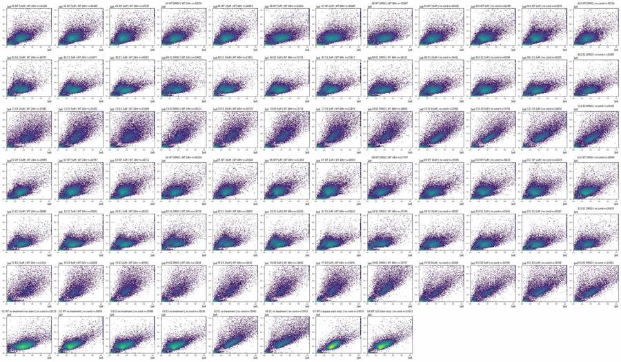
17
tool output
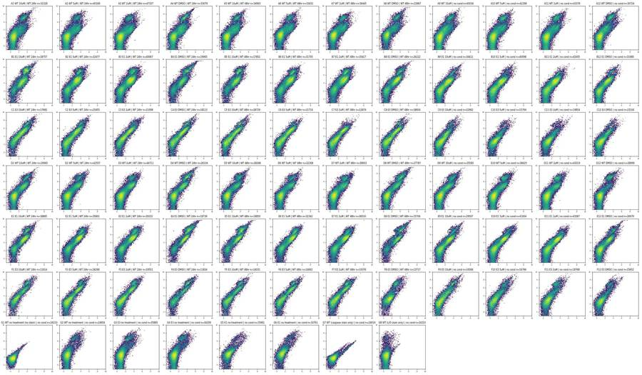
19
tool call · Bash
cd /task; cat > work/detail.py <<'EOF'
import sys; sys.path.insert(0,'/task/work')
from load import *
import matplotlib; matplotlib.use('Agg')
import matplotlib.pyplot as plt
d=load()
wells=sys.argv[2].split(',')
name=sys.argv[1]
def a(x,c=150): return np.arcsinh(x/c)
lg=lambda x:np.log10(np.clip(x,1,None))
fig,axs=plt.subplots(5,len(wells),figsize=(4*len(wells),20))
for j,w in enumerate(wells):
df=d[w][1]; l=lay[lay.well==w].iloc[0]
LN=matplotlib.colors.LogNorm()
axs[0,j].hist2d(df['FSC-A'],df['SSC-A'],bins=150,range=[[0,1.05e6],[0,1.05e6]],norm=LN,cmap='viridis'); axs[0,j].set_title(f"{w} {l['sample']} {l.conditioned_media[:7]}")
axs[1,j].hist2d(lg(df['FSC-A']),lg(df['SSC-A']),bins=150,range=[[4,6.1],[2.5,6.1]],norm=matplotlib.colors.LogNorm(),cmap='viridis')
axs[2,j].hist2d(df['FSC-A'],df['FSC-H'],bins=150,range=[[0,1.05e6],[0,1.05e6]],norm=matplotlib.colors.LogNorm(),cmap='viridis')
axs[3,j].hist2d(lg(df['BL1-A']),lg(df['BL2-A']),bins=150,range=[[1,6],[1.5,6.1]],norm=matplotlib.colors.LogNorm(),cmap='viridis')
axs[4,j].hist2d(df['FSC-A'],lg(df['BL2-A']),bins=150,range=[[0,1.05e6],[1.5,6.1]],norm=matplotlib.colors.LogNorm(),cmap='viridis')
for ax,t in zip(axs[:,0],['FSC-A/SSC-A','log FSC-A/log SSC-A','FSC-A/FSC-H','log BL1-A / log BL2-A','FSC-A / log BL2-A']): ax.set_ylabel(t)
fig.tight_layout(); fig.savefig(f'/task/work/{name}.png',dpi=55)
EOF
python3 -I work/detail.py d_ctrl G1,G7,G8,G2,A12,D12,A9
python3 -I work/detail.py d_ko B12,E12,B4,E4,C12,F12,C4,G3,G520
tool call · Read
{
"file_path": "/task/work/d_ctrl.png"
}21
tool call · Read
{
"file_path": "/task/work/d_ko.png"
}22
tool output
(Bash completed with no output)
23
tool output
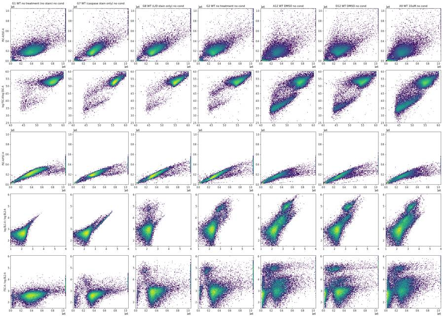
24
tool output
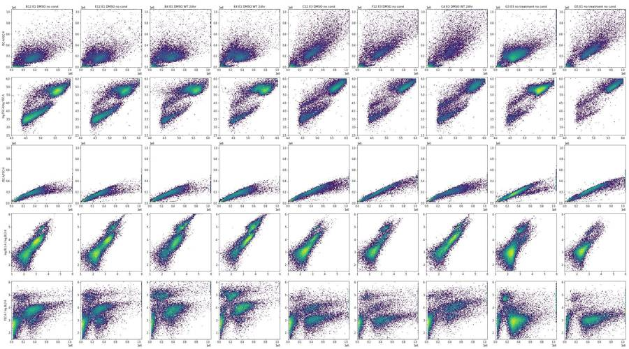
26
tool call · Bash
cd /task; python3 -I - <<'EOF'
import sys; sys.path.insert(0,'/task/work')
from load import *
d=load()
def cells(df): return df[(df['FSC-A']>150e3)&(df['FSC-A']<1.04e6)&(df['SSC-A']>50e3)&(df['SSC-A']<1.04e6)]
for w in ['G1','G7','G8','G2','A12','B12','B4','E4','C12','B9','A4']:
c=cells(d[w][1]); b1=c['BL1-A'].values; b2=c['BL2-A'].values
print(w,len(c),'BL1 pct 50/95/99/99.9',np.percentile(b1,[50,95,99,99.9]).round(0),'BL2',np.percentile(b2,[50,95,99,99.9]).round(0))
for lo,hi in [(0,300),(300,600),(600,1000),(1000,2000),(2000,4000),(4000,10000),(10000,30000),(30000,1e6)]:
m=(b1>=lo)&(b1<hi)
if m.sum()>20:
r=b2[m]/b1[m]
print(f' BL1 {lo}-{hi}: n={m.sum()} ({100*m.mean():.1f}%) ratio BL2/BL1 pct10/50/90 = {np.percentile(r,[10,50,90]).round(2)} FSC med {np.median(c["FSC-A"].values[m]):.0f}')
EOF27
tool output
<stdin>:11: RuntimeWarning: divide by zero encountered in divide G1 24123 BL1 pct 50/95/99/99.9 [ 94. 260. 403. 904.] BL2 [ 373. 1005. 1944. 4388.] BL1 0-300: n=20451 (84.8%) ratio BL2/BL1 pct10/50/90 = [ 1.42 3.82 13.35] FSC med 409716 BL1 300-600: n=625 (2.6%) ratio BL2/BL1 pct10/50/90 = [1.62 3.72 6.17] FSC med 578569 BL1 600-1000: n=49 (0.2%) ratio BL2/BL1 pct10/50/90 = [3.48 4.13 5.77] FSC med 547424 G7 22229 BL1 pct 50/95/99/99.9 [ 139. 702. 8554. 21606.] BL2 [ 412. 1615. 7996. 19673.] BL1 0-300: n=18037 (81.1%) ratio BL2/BL1 pct10/50/90 = [1.29 3.1 9.27] FSC med 392930 BL1 300-600: n=1560 (7.0%) ratio BL2/BL1 pct10/50/90 = [1.15 2.18 3.87] FSC med 480635 BL1 600-1000: n=297 (1.3%) ratio BL2/BL1 pct10/50/90 = [1.09 1.75 3.6 ] FSC med 435803 BL1 1000-2000: n=230 (1.0%) ratio BL2/BL1 pct10/50/90 = [0.91 1.14 2.43] FSC med 331396 BL1 2000-4000: n=245 (1.1%) ratio BL2/BL1 pct10/50/90 = [0.89 1.03 1.34] FSC med 323933 BL1 4000-10000: n=293 (1.3%) ratio BL2/BL1 pct10/50/90 = [0.87 0.94 1.07] FSC med 279101 BL1 10000-30000: n=164 (0.7%) ratio BL2/BL1 pct10/50/90 = [0.88 0.93 0.99] FSC med 247498 G8 22745 BL1 pct 50/95/99/99.9 [111. 282. 444. 871.] BL2 [ 550. 5308. 66643. 184233.] BL1 0-300: n=19739 (86.8%) ratio BL2/BL1 pct10/50/90 = [-2.94 4.68 32.53] FSC med 349562 BL1 300-600: n=811 (3.6%) ratio BL2/BL1 pct10/50/90 = [ 0.99 4.37 33.34] FSC med 561875 BL1 600-1000: n=68 (0.3%) ratio BL2/BL1 pct10/50/90 = [ 2.95 4.55 25.39] FSC med 666740 G2 21915 BL1 pct 50/95/99/99.9 [ 157. 1038. 3668. 7770.] BL2 [ 722. 28484. 101995. 263678.] BL1 0-300: n=17074 (77.9%) ratio BL2/BL1 pct10/50/90 = [-2.72 4.29 21.27] FSC med 317920 BL1 300-600: n=2076 (9.5%) ratio BL2/BL1 pct10/50/90 = [ 0.76 4.92 37.03] FSC med 407832 BL1 600-1000: n=601 (2.7%) ratio BL2/BL1 pct10/50/90 = [ 2.54 27.65 101.7 ] FSC med 248055 BL1 1000-2000: n=514 (2.3%) ratio BL2/BL1 pct10/50/90 = [ 3.32 37.81 84.4 ] FSC med 223994 BL1 2000-4000: n=428 (2.0%) ratio BL2/BL1 pct10/50/90 = [ 2.95 12.23 47.48] FSC med 215847 BL1 4000-10000: n=179 (0.8%) ratio BL2/BL1 pct10/50/90 = [ 2.98 8.92 34.13] FSC med 227352 A12 18256 BL1 pct 50/95/99/99.9 [ 271. 3772. 8125. 16955.] BL2 [ 1698. 115080. 206660. 359661.] BL1 0-300: n=9107 (49.9%) ratio BL2/BL1 pct10/50/90 = [-2.21 4.69 19.69] FSC med 324038 BL1 300-600: n=2256 (12.4%) ratio BL2/BL1 pct10/50/90 = [ 1.63 6.66 18.19] FSC med 358417 BL1 600-1000: n=1756 (9.6%) ratio BL2/BL1 pct10/50/90 = [ 2.5 7.55 29.24] FSC med 359000 BL1 1000-2000: n=2244 (12.3%) ratio BL2/BL1 pct10/50/90 = [ 2.2 10.04 73.8 ] FSC med 316314 BL1 2000-4000: n=1562 (8.6%) ratio BL2/BL1 pct10/50/90 = [ 2.05 25.92 58.01] FSC med 327713 BL1 4000-10000: n=707 (3.9%) ratio BL2/BL1 pct10/50/90 = [ 1.62 12.58 42.36] FSC med 295604 BL1 10000-30000: n=105 (0.6%) ratio BL2/BL1 pct10/50/90 = [ 1.38 2.41 19.26] FSC med 249607 B12 15453 BL1 pct 50/95/99/99.9 [ 984. 3798. 7645. 18958.] BL2 [ 5727. 49258. 123355. 234691.] BL1 0-300: n=2596 (16.8%) ratio BL2/BL1 pct10/50/90 = [-0.2 4.88 15.3 ] FSC med 357174 BL1 300-600: n=2155 (13.9%) ratio BL2/BL1 pct10/50/90 = [ 2.17 6.15 13.04] FSC med 326142 BL1 600-1000: n=3009 (19.5%) ratio BL2/BL1 pct10/50/90 = [ 3.03 6.52 10.64] FSC med 349524 BL1 1000-2000: n=4528 (29.3%) ratio BL2/BL1 pct10/50/90 = [ 2.78 5.81 10.09] FSC med 394778 BL1 2000-4000: n=2427 (15.7%) ratio BL2/BL1 pct10/50/90 = [ 2.41 4.82 24.58] FSC med 416219 BL1 4000-10000: n=607 (3.9%) ratio BL2/BL1 pct10/50/90 = [ 2.63 6.44 26.62] FSC med 429507 BL1 10000-30000: n=73 (0.5%) ratio BL2/BL1 pct10/50/90 = [ 2.62 7.17 20.65] FSC med 334421 B4 12473 BL1 pct 50/95/99/99.9 [ 1504. 9176. 18038. 31195.] BL2 [ 7377. 177817. 364167. 599678.] BL1 0-300: n=1169 (9.4%) ratio BL2/BL1 pct10/50/90 = [-1.38 3.97 13.72] FSC med 373342 BL1 300-600: n=1081 (8.7%) ratio BL2/BL1 pct10/50/90 = [ 1.2 4.43 14.51] FSC med 311276 BL1 600-1000: n=1924 (15.4%) ratio BL2/BL1 pct10/50/90 = [ 2.07 4.44 10.97] FSC med 344885 BL1 1000-2000: n=3433 (27.5%) ratio BL2/BL1 pct10/50/90 = [ 2.21 4.92 21.93] FSC med 388514 BL1 2000-4000: n=2802 (22.5%) ratio BL2/BL1 pct10/50/90 = [ 2.21 5.93 34.36] FSC med 379643 BL1 4000-10000: n=1498 (12.0%) ratio BL2/BL1 pct10/50/90 = [ 2.51 15.83 30.29] FSC med 327240 BL1 10000-30000: n=496 (4.0%) ratio BL2/BL1 pct10/50/90 = [ 7.74 17.19 24.84] FSC med 330632 E4 12638 BL1 pct 50/95/99/99.9 [ 2750. 14147. 26581. 49195.] BL2 [ 13136. 211076. 424577. 721255.] BL1 0-300: n=952 (7.5%) ratio BL2/BL1 pct10/50/90 = [-0.81 4.02 10.85] FSC med 363274 BL1 300-600: n=463 (3.7%) ratio BL2/BL1 pct10/50/90 = [ 1.37 3.97 12.95] FSC med 341505 BL1 600-1000: n=781 (6.2%) ratio BL2/BL1 pct10/50/90 = [ 2.3 4.08 12.44] FSC med 298285 BL1 1000-2000: n=2513 (19.9%) ratio BL2/BL1 pct10/50/90 = [2.7 4.28 7.91] FSC med 356968 BL1 2000-4000: n=3645 (28.8%) ratio BL2/BL1 pct10/50/90 = [ 2.97 4.72 18.57] FSC med 387275 BL1 4000-10000: n=3207 (25.4%) ratio BL2/BL1 pct10/50/90 = [ 3.26 11.9 24.24] FSC med 334562 BL1 10000-30000: n=964 (7.6%) ratio BL2/BL1 pct10/50/90 = [ 5.66 12.61 22.64] FSC med 340020 BL1 30000-1000000.0: n=88 (0.7%) ratio BL2/BL1 pct10/50/90 = [ 8.47 12.58 18.06] FSC med 427812 C12 13231 BL1 pct 50/95/99/99.9 [ 327. 2801. 6136. 15429.] BL2 [ 1750. 29664. 106697. 271720.] BL1 0-300: n=5997 (45.3%) ratio BL2/BL1 pct10/50/90 = [ 0.46 5.1 15.55] FSC med 418312 BL1 300-600: n=2909 (22.0%) ratio BL2/BL1 pct10/50/90 = [ 1.83 4.63 13.32] FSC med 542278 BL1 600-1000: n=1419 (10.7%) ratio BL2/BL1 pct10/50/90 = [ 3.33 7.8 15.57] FSC med 437201 BL1 1000-2000: n=1630 (12.3%) ratio BL2/BL1 pct10/50/90 = [ 4.38 8.81 24.89] FSC med 454681 BL1 2000-4000: n=823 (6.2%) ratio BL2/BL1 pct10/50/90 = [ 3.94 7.94 39.62] FSC med 513128 BL1 4000-10000: n=298 (2.3%) ratio BL2/BL1 pct10/50 … [1,671 more characters not shown]
29
thinking
CellEvent spills about 0.93 into BL2 in the caspase-only control, so I'm checking compensated distributions to set the live/dead and caspase gates.
30
tool call · Bash
cd /task; python3 -I - <<'EOF'
import sys; sys.path.insert(0,'/task/work')
from load import *
import matplotlib; matplotlib.use('Agg'); import matplotlib.pyplot as plt
d=load()
def cells(df): return df[(df['FSC-A']>150e3)&(df['FSC-A']<1.04e6)&(df['SSC-A']>50e3)&(df['SSC-A']<1.04e6)]
# spill estimates
c=cells(d['G7'][1]); u=cells(d['G1'][1])
bg1,bg2=np.median(u['BL1-A']),np.median(u['BL2-A'])
m=c['BL1-A']>3000
x=c['BL1-A'][m]-bg1; y=c['BL2-A'][m]-bg2
print('G7 n pos',m.sum(),'median ratio',np.median(y/x),'lsq slope',(x*y).sum()/(x*x).sum(), np.polyfit(c['BL1-A'][m],c['BL2-A'][m],1))
c8=cells(d['G8'][1]); m=c8['BL2-A']>30000
x=c8['BL2-A'][m]-bg2; y=c8['BL1-A'][m]-bg1
print('G8 n dead',m.sum(),'median ratio BL1/BL2',np.median(y/x),'slope',np.polyfit(c8['BL2-A'][m],c8['BL1-A'][m],1), 'BL1 median of dead',np.median(c8['BL1-A'][m]))
k12=0.93
lg=lambda x:np.log10(np.clip(x,10,None))
fig,axs=plt.subplots(3,1,figsize=(14,16))
ws=['G1','G7','G8','G2','A12','A4','B12','B4','E4','E12','C12','C4','F12','G3','G5']
cm=plt.get_cmap('tab20')
for i,w in enumerate(ws):
c=cells(d[w][1]); b2c=c['BL2-A']-k12*c['BL1-A']
axs[0].hist(lg(b2c),bins=200,range=(1.5,6.1),histtype='step',density=True,label=w,color=cm(i))
axs[1].hist(lg(c['BL1-A']),bins=200,range=(1,6.1),histtype='step',density=True,label=w,color=cm(i))
live=c[b2c<20000]
axs[2].hist(lg(live['BL1-A']),bins=200,range=(1,6.1),histtype='step',density=True,label=w,color=cm(i))
axs[0].set_title('comp BL2 (cells)'); axs[1].set_title('BL1 cells'); axs[2].set_title('BL1, compBL2<20000')
for a in axs: a.legend(ncol=5); a.set_xticks(np.arange(1.5,6.1,0.25)); a.grid(alpha=.3)
fig.tight_layout(); fig.savefig('work/h1.png',dpi=60)
EOF31
tool call · Read
{
"file_path": "/task/work/h1.png"
}32
tool output
G7 n pos 578 median ratio 0.9077566446782587 lsq slope 0.9161216546615529 [ 0.91500405 300.32438638] G8 n dead 508 median ratio BL1/BL2 0.000606008992793824 slope [2.25959312e-04 1.53355639e+02] BL1 median of dead 139.5
33
tool output
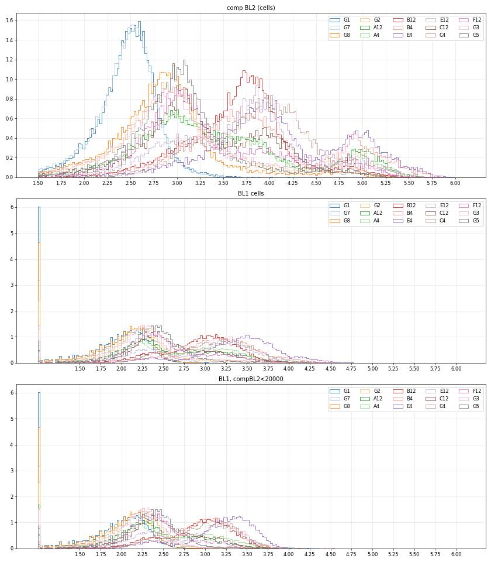
35
tool call · Bash
cd /task; python3 -I - <<'EOF'
import sys; sys.path.insert(0,'/task/work')
from load import *
import matplotlib; matplotlib.use('Agg'); import matplotlib.pyplot as plt
d=load()
ws=['G2','A12','A1','B12','B4','C12','F1','G5']
lg=lambda x:np.log10(np.clip(x,10,None))
fig,axs=plt.subplots(5,len(ws),figsize=(4.2*len(ws),21))
for j,w in enumerate(ws):
df=d[w][1]; b2c=df['BL2-A']-0.93*df['BL1-A']
LN=lambda:matplotlib.colors.LogNorm()
axs[0,j].hist2d(lg(df['FSC-A']),lg(df['SSC-A']),bins=150,range=[[4.3,6.05],[2.8,6.05]],norm=LN(),cmap='viridis'); axs[0,j].set_title(w+' all')
dd=df[b2c>30000]
axs[1,j].hist2d(lg(dd['FSC-A']),lg(dd['SSC-A']),bins=150,range=[[4.3,6.05],[2.8,6.05]],norm=LN(),cmap='viridis'); axs[1,j].set_title(f'SYTOX bright n={len(dd)}')
dd=df[(b2c<30000)&(df['BL1-A']>600)]
axs[2,j].hist2d(lg(dd['FSC-A']),lg(dd['SSC-A']),bins=150,range=[[4.3,6.05],[2.8,6.05]],norm=LN(),cmap='viridis'); axs[2,j].set_title(f'SYTOX notbright BL1>600 n={len(dd)}')
dd=df[(b2c<30000)&(df['BL1-A']<=600)]
axs[3,j].hist2d(lg(dd['FSC-A']),lg(dd['SSC-A']),bins=150,range=[[4.3,6.05],[2.8,6.05]],norm=LN(),cmap='viridis'); axs[3,j].set_title(f'double neg n={len(dd)}')
c=df[(df['FSC-A']>60e3)&(df['SSC-A']>20e3)]
axs[4,j].hist2d(c['FSC-A'],c['FSC-H']/c['FSC-A'],bins=150,range=[[0,1.05e6],[0,1.0]],norm=LN(),cmap='viridis'); axs[4,j].set_title('FSC-H/FSC-A vs FSC-A')
for a in axs[:4,j]: a.grid(alpha=.3)
axs[4,j].grid(alpha=.3)
fig.tight_layout(); fig.savefig('work/z1.png',dpi=55)
EOF36
tool call · Read
{
"file_path": "/task/work/z1.png"
}37
tool output
(Bash completed with no output)
38
tool output
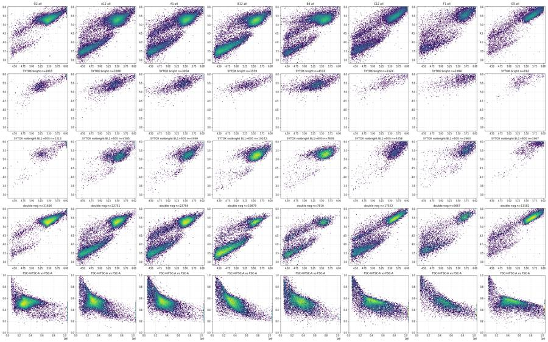
40
tool call · Bash
cd /task; python3 -I - <<'EOF'
import sys; sys.path.insert(0,'/task/work')
from load import *
d=load()
for grp,ws in [('WT',['A%d'%i for i in range(1,13)]+['D%d'%i for i in range(1,13)]),('E1',['B%d'%i for i in range(1,13)]),('E3',['C%d'%i for i in range(1,13)]+['F%d'%i for i in range(1,13)]),('G1G2G7G8',['G1','G2','G7','G8'])]:
df=pd.concat([d[w][1] for w in ws])
c=df[(df['FSC-A']>55e3)&(df['SSC-A']>60e3)&(df['FSC-A']<1.04e6)&(df['SSC-A']<1.04e6)]
print(grp)
for lo in range(50,1050,100):
m=(c['FSC-A']>=lo*1e3)&(c['FSC-A']<(lo+100)*1e3)
r=(c['FSC-H']/c['FSC-A'])[m].values
h,e=np.histogram(r,bins=100,range=(0,1)); mode=e[h.argmax()]+0.005
up=r[r>=mode]; sd=np.sqrt(np.mean((up-mode)**2))
print(f' A {lo}-{lo+100}k n={m.sum()} mode={mode:.3f} upperSD={sd:.3f} pct1/5/25/50/75/95/99={np.percentile(r,[1,5,25,50,75,95,99]).round(2)} frac<mode-2.5sd={np.mean(r<mode-2.5*sd):.3f}')
EOF41
tool output
WT A 50-150k n=22118 mode=0.745 upperSD=0.181 pct1/5/25/50/75/95/99=[0.33 0.4 0.53 0.66 0.78 0.94 1.19] frac<mode-2.5sd=0.003 A 150-250k n=81777 mode=0.495 upperSD=0.138 pct1/5/25/50/75/95/99=[0.36 0.42 0.49 0.55 0.63 0.74 0.81] frac<mode-2.5sd=0.000 A 250-350k n=231553 mode=0.545 upperSD=0.060 pct1/5/25/50/75/95/99=[0.39 0.44 0.5 0.54 0.58 0.64 0.69] frac<mode-2.5sd=0.013 A 350-450k n=138456 mode=0.545 upperSD=0.049 pct1/5/25/50/75/95/99=[0.34 0.4 0.48 0.52 0.56 0.61 0.66] frac<mode-2.5sd=0.085 A 450-550k n=59877 mode=0.525 upperSD=0.045 pct1/5/25/50/75/95/99=[0.28 0.33 0.43 0.5 0.54 0.59 0.62] frac<mode-2.5sd=0.220 A 550-650k n=23157 mode=0.505 upperSD=0.036 pct1/5/25/50/75/95/99=[0.25 0.28 0.35 0.45 0.5 0.55 0.58] frac<mode-2.5sd=0.406 A 650-750k n=10304 mode=0.305 upperSD=0.133 pct1/5/25/50/75/95/99=[0.23 0.26 0.31 0.38 0.46 0.52 0.55] frac<mode-2.5sd=0.000 A 750-850k n=5524 mode=0.315 upperSD=0.109 pct1/5/25/50/75/95/99=[0.2 0.23 0.29 0.34 0.42 0.49 0.53] frac<mode-2.5sd=0.000 A 850-950k n=3119 mode=0.305 upperSD=0.101 pct1/5/25/50/75/95/99=[0.2 0.21 0.27 0.32 0.39 0.47 0.51] frac<mode-2.5sd=0.000 A 950-1050k n=1728 mode=0.275 upperSD=0.100 pct1/5/25/50/75/95/99=[0.18 0.2 0.25 0.3 0.37 0.45 0.48] frac<mode-2.5sd=0.000 E1 A 50-150k n=14086 mode=0.685 upperSD=0.140 pct1/5/25/50/75/95/99=[0.33 0.42 0.57 0.66 0.74 0.88 1.04] frac<mode-2.5sd=0.010 A 150-250k n=35117 mode=0.625 upperSD=0.072 pct1/5/25/50/75/95/99=[0.34 0.43 0.54 0.6 0.66 0.73 0.8 ] frac<mode-2.5sd=0.063 A 250-350k n=75952 mode=0.575 upperSD=0.048 pct1/5/25/50/75/95/99=[0.38 0.45 0.52 0.56 0.6 0.65 0.68] frac<mode-2.5sd=0.064 A 350-450k n=71082 mode=0.545 upperSD=0.041 pct1/5/25/50/75/95/99=[0.36 0.41 0.47 0.52 0.56 0.61 0.63] frac<mode-2.5sd=0.134 A 450-550k n=30757 mode=0.515 upperSD=0.042 pct1/5/25/50/75/95/99=[0.3 0.35 0.41 0.47 0.52 0.57 0.6 ] frac<mode-2.5sd=0.231 A 550-650k n=10617 mode=0.395 upperSD=0.094 pct1/5/25/50/75/95/99=[0.26 0.29 0.35 0.42 0.49 0.55 0.57] frac<mode-2.5sd=0.000 A 650-750k n=4294 mode=0.305 upperSD=0.115 pct1/5/25/50/75/95/99=[0.24 0.26 0.3 0.35 0.43 0.51 0.54] frac<mode-2.5sd=0.000 A 750-850k n=2275 mode=0.295 upperSD=0.094 pct1/5/25/50/75/95/99=[0.21 0.23 0.27 0.31 0.37 0.47 0.5 ] frac<mode-2.5sd=0.000 A 850-950k n=1271 mode=0.265 upperSD=0.084 pct1/5/25/50/75/95/99=[0.2 0.22 0.25 0.29 0.33 0.43 0.47] frac<mode-2.5sd=0.000 A 950-1050k n=656 mode=0.245 upperSD=0.087 pct1/5/25/50/75/95/99=[0.18 0.2 0.24 0.27 0.32 0.42 0.45] frac<mode-2.5sd=0.000 E3 A 50-150k n=15347 mode=0.805 upperSD=0.126 pct1/5/25/50/75/95/99=[0.34 0.42 0.59 0.72 0.82 0.93 1.09] frac<mode-2.5sd=0.110 A 150-250k n=18672 mode=0.655 upperSD=0.094 pct1/5/25/50/75/95/99=[0.3 0.37 0.49 0.58 0.67 0.78 0.85] frac<mode-2.5sd=0.105 A 250-350k n=37649 mode=0.595 upperSD=0.047 pct1/5/25/50/75/95/99=[0.32 0.4 0.49 0.55 0.59 0.64 0.7 ] frac<mode-2.5sd=0.188 A 350-450k n=57119 mode=0.565 upperSD=0.034 pct1/5/25/50/75/95/99=[0.33 0.39 0.48 0.53 0.57 0.61 0.64] frac<mode-2.5sd=0.254 A 450-550k n=48107 mode=0.535 upperSD=0.032 pct1/5/25/50/75/95/99=[0.31 0.36 0.45 0.51 0.54 0.58 0.6 ] frac<mode-2.5sd=0.282 A 550-650k n=31073 mode=0.515 upperSD=0.030 pct1/5/25/50/75/95/99=[0.28 0.33 0.42 0.48 0.52 0.55 0.58] frac<mode-2.5sd=0.342 A 650-750k n=18117 mode=0.465 upperSD=0.044 pct1/5/25/50/75/95/99=[0.26 0.31 0.39 0.44 0.49 0.53 0.55] frac<mode-2.5sd=0.140 A 750-850k n=10161 mode=0.395 upperSD=0.072 pct1/5/25/50/75/95/99=[0.24 0.29 0.36 0.41 0.46 0.51 0.54] frac<mode-2.5sd=0.003 A 850-950k n=5629 mode=0.395 upperSD=0.060 pct1/5/25/50/75/95/99=[0.22 0.27 0.34 0.39 0.44 0.49 0.52] frac<mode-2.5sd=0.021 A 950-1050k n=2987 mode=0.425 upperSD=0.035 pct1/5/25/50/75/95/99=[0.21 0.25 0.32 0.37 0.42 0.47 0.49] frac<mode-2.5sd=0.339 G1G2G7G8 A 50-150k n=1867 mode=0.565 upperSD=0.217 pct1/5/25/50/75/95/99=[0.34 0.4 0.53 0.64 0.75 0.92 1.11] frac<mode-2.5sd=0.000 A 150-250k n=7077 mode=0.495 upperSD=0.121 pct1/5/25/50/75/95/99=[0.34 0.42 0.48 0.52 0.59 0.71 0.8 ] frac<mode-2.5sd=0.000 A 250-350k n=30531 mode=0.515 upperSD=0.074 pct1/5/25/50/75/95/99=[0.4 0.44 0.49 0.53 0.58 0.64 0.69] frac<mode-2.5sd=0.001 A 350-450k n=31058 mode=0.525 upperSD=0.058 pct1/5/25/50/75/95/99=[0.39 0.43 0.49 0.53 0.56 0.62 0.66] frac<mode-2.5sd=0.007 A 450-550k n=13874 mode=0.535 upperSD=0.044 pct1/5/25/50/75/95/99=[0.33 0.41 0.49 0.52 0.55 0.6 0.64] frac<mode-2.5sd=0.067 A 550-650k n=4816 mode=0.505 upperSD=0.037 pct1/5/25/50/75/95/99=[0.27 0.32 0.46 0.5 0.53 0.56 0.59] frac<mode-2.5sd=0.120 A 650-750k n=1764 mode=0.485 upperSD=0.033 pct1/5/25/50/75/95/99=[0.24 0.27 0.36 0.45 0.49 0.53 0.55] frac<mode-2.5sd=0.329 A 750-850k n=929 mode=0.305 upperSD=0.128 pct1/5/25/50/75/95/99=[0.23 0.25 0.3 0.37 0.45 0.5 0.53] frac<mode-2.5sd=0.000 A 850-950k n=575 mode=0.305 upperSD=0.111 pct1/5/25/50/75/95/99=[0.21 0.24 0.29 0.33 0.43 0.48 0.52] frac<mode-2.5sd=0.000 A 950-1050k n=359 mode=0.285 upperSD=0.103 pct1/5/25/50/75/95/99=[0.2 0.23 0.27 0.31 0.39 0.46 0.49] frac<mode-2.5sd=0.000
43
tool call · Bash
cd /task; python3 -I - <<'EOF'
import flowkit as fk, inspect
print(fk.__version__)
print(inspect.signature(fk.Matrix.__init__)); print(fk.Matrix.__init__.__doc__)
print(inspect.signature(fk.GatingStrategy.add_comp_matrix)); print(fk.GatingStrategy.add_comp_matrix.__doc__)
print(inspect.signature(fk.GatingStrategy.add_transform));
print(inspect.signature(fk.GatingStrategy.add_gate)); print(fk.GatingStrategy.add_gate.__doc__)
print(inspect.signature(fk.Dimension.__init__)); print(fk.Dimension.__init__.__doc__)
print(inspect.signature(fk.transforms.LogicleTransform.__init__))
print(inspect.signature(fk.gates.PolygonGate.__init__)); print(inspect.signature(fk.gates.RectangleGate.__init__))
print(inspect.signature(fk.GatingStrategy.gate_sample)); print([m for m in dir(fk.GatingResults) if not m.startswith('_')])
print(inspect.signature(fk.export_gatingml))
EOF44
tool output (error)
Exit code 1
1.2.3
(self, spill_data_or_file, detectors, fluorochromes=None, null_channels=None)
None
(self, matrix_id, matrix)
Add a compensation matrix to the gating strategy, see `transforms` module. The matrix ID must be unique in the
gating strategy.
:param matrix_id: Text string used to identify the matrix (cannot be 'uncompensated' or 'fcs')
:param matrix: an instance of the Matrix class
:return: None
(self, transform_id, transform)
(self, gate, gate_path, sample_id=None)
Add a gate to the gating strategy, see `gates` module. The gate ID and gate path
must be unique in the gating strategy. Custom sample gates may be added by specifying
an optional sample ID. Note, the gate & gate path must already exist prior to adding
custom sample gates.
:param gate: instance from a subclass of the Gate class
:param gate_path: complete ordered tuple of gate names for unique set of gate ancestors
:param sample_id: text string for specifying given gate as a custom Sample gate
:return: None
(self, dimension_id, compensation_ref='uncompensated', transformation_ref=None, range_min=None, range_max=None)
None
(self, param_t, param_w, param_m, param_a)
(self, gate_name, dimensions, vertices, use_complement=False)
(self, gate_name, dimensions, use_complement=False)
(self, sample, cache_events=False, verbose=False)
Traceback (most recent call last):
File "<stdin>", line 10, in <module>
AttributeError: module 'flowkit' has no attribute 'GatingResults'46
agent
Gates for cells and singlets are defined; now building the FlowKit strategy with a custom compensation matrix and choosing the fluorescence thresholds on compensated singlets.
47
tool call · Bash
cd /task; cat > work/strategy.py <<'EOF'
import flowkit as fk, numpy as np
K12=0.915 # CellEvent (BL1) spill into BL2, from caspase-only control G7
K21=0.0003 # SYTOX AADvanced (BL2) spill into BL1, from L/D-only control G8
CELLS_POLY=[(55e3,95e3),(130e3,60e3),(1.04e6,60e3),(1.04e6,1.04e6),(55e3,1.04e6)]
SING_POLY=[(40e3,12e3),(400e3,160e3),(700e3,277e3),(1.045e6,373e3),(1.045e6,600e3),(600e3,400e3),(300e3,240e3),(150e3,150e3),(40e3,60e3)]
SYTOX_THR=25000. # compensated BL2-A (linear units)
CASP_THR=600. # compensated BL1-A (linear units)
def xf(): return fk.transforms.LogicleTransform(param_t=1048576, param_w=0.5, param_m=4.5, param_a=0)
def build(sytox_thr=SYTOX_THR, casp_thr=CASP_THR):
gs=fk.GatingStrategy()
comp=fk.Matrix(np.array([[1.0,K12],[K21,1.0]]),detectors=['BL1-A','BL2-A'],fluorochromes=['CellEvent_Casp37_Green','SYTOX_AADvanced'])
gs.add_comp_matrix('comp_single_stain',comp)
t=xf(); gs.add_transform('logicle',t)
ts=lambda v: float(t.apply(np.array([v],dtype=float))[0])
d=lambda ch: fk.Dimension(ch,compensation_ref='uncompensated')
gs.add_gate(fk.gates.PolygonGate('cells',[d('FSC-A'),d('SSC-A')],CELLS_POLY),('root',))
gs.add_gate(fk.gates.PolygonGate('singlets',[d('FSC-A'),d('FSC-H')],SING_POLY),('root','cells'))
fd=lambda ch,lo,hi: fk.Dimension(ch,compensation_ref='comp_single_stain',transformation_ref='logicle',range_min=lo,range_max=hi)
P=('root','cells','singlets')
gs.add_gate(fk.gates.RectangleGate('live',[fd('BL2-A',None,ts(sytox_thr))]),P)
gs.add_gate(fk.gates.RectangleGate('dead',[fd('BL2-A',ts(sytox_thr),None)]),P)
gs.add_gate(fk.gates.RectangleGate('caspase_pos_live',[fd('BL1-A',ts(casp_thr),None)]),P+('live',))
gs.add_gate(fk.gates.RectangleGate('caspase_pos_all',[fd('BL1-A',ts(casp_thr),None)]),P)
return gs
EOF
python3 -I - <<'EOF'
import sys; sys.path.insert(0,'/task/work')
from load import *; import strategy as S, pickle
gs=S.build()
d=load()
out={}
for w,(s,df) in d.items():
res=gs.gate_sample(s)
m=res.get_gate_membership('singlets')
q=df[m].copy()
q['B1c']=(q['BL1-A']-S.K21*q['BL2-A'])/(1-S.K12*S.K21); q['B2c']=(q['BL2-A']-S.K12*q['BL1-A'])/(1-S.K12*S.K21)
out[w]=q[['FSC-A','SSC-A','B1c','B2c','Time']]
rep=res.report.set_index('gate_name')
if w in('G1','G2','G7','G8','A12','B4','C12'): print(w, rep[['count','relative_percent']].round(1).to_dict('index'))
pickle.dump(out,open('/task/work/singlets.pkl','wb'))
EOF48
tool output
A12 {'cells': {'count': 19137, 'relative_percent': 62.3}, 'singlets': {'count': 17226, 'relative_percent': 90.0}, 'caspase_pos_all': {'count': 5831, 'relative_percent': 33.8}, 'dead': {'count': 2551, 'relative_percent': 14.8}, 'live': {'count': 14675, 'relative_percent': 85.2}, 'caspase_pos_live': {'count': 3308, 'relative_percent': 22.5}}
B4 {'cells': {'count': 13873, 'relative_percent': 69.5}, 'singlets': {'count': 12462, 'relative_percent': 89.8}, 'caspase_pos_all': {'count': 9918, 'relative_percent': 79.6}, 'dead': {'count': 3301, 'relative_percent': 26.5}, 'live': {'count': 9161, 'relative_percent': 73.5}, 'caspase_pos_live': {'count': 6621, 'relative_percent': 72.3}}
C12 {'cells': {'count': 13726, 'relative_percent': 59.4}, 'singlets': {'count': 12283, 'relative_percent': 89.5}, 'caspase_pos_all': {'count': 3246, 'relative_percent': 26.4}, 'dead': {'count': 556, 'relative_percent': 4.5}, 'live': {'count': 11727, 'relative_percent': 95.5}, 'caspase_pos_live': {'count': 2700, 'relative_percent': 23.0}}
G1 {'cells': {'count': 24648, 'relative_percent': 94.0}, 'singlets': {'count': 23917, 'relative_percent': 97.0}, 'caspase_pos_all': {'count': 52, 'relative_percent': 0.2}, 'dead': {'count': 0, 'relative_percent': 0.0}, 'live': {'count': 23917, 'relative_percent': 100.0}, 'caspase_pos_live': {'count': 52, 'relative_percent': 0.2}}
G2 {'cells': {'count': 22591, 'relative_percent': 91.6}, 'singlets': {'count': 21599, 'relative_percent': 95.6}, 'caspase_pos_all': {'count': 1802, 'relative_percent': 8.3}, 'dead': {'count': 1300, 'relative_percent': 6.0}, 'live': {'count': 20299, 'relative_percent': 94.0}, 'caspase_pos_live': {'count': 751, 'relative_percent': 3.7}}
G7 {'cells': {'count': 22377, 'relative_percent': 93.2}, 'singlets': {'count': 21384, 'relative_percent': 95.6}, 'caspase_pos_all': {'count': 1018, 'relative_percent': 4.8}, 'dead': {'count': 0, 'relative_percent': 0.0}, 'live': {'count': 21384, 'relative_percent': 100.0}, 'caspase_pos_live': {'count': 1018, 'relative_percent': 4.8}}
G8 {'cells': {'count': 23031, 'relative_percent': 94.7}, 'singlets': {'count': 22138, 'relative_percent': 96.1}, 'caspase_pos_all': {'count': 65, 'relative_percent': 0.3}, 'dead': {'count': 559, 'relative_percent': 2.5}, 'live': {'count': 21579, 'relative_percent': 97.5}, 'caspase_pos_live': {'count': 62, 'relative_percent': 0.3}}50
tool call · Bash
cd /task; python3 -I - <<'EOF'
import sys; sys.path.insert(0,'/task/work')
import pickle, numpy as np, pandas as pd
import matplotlib; matplotlib.use('Agg'); import matplotlib.pyplot as plt
import strategy as S
lay=pd.read_csv('/task/inputs/plate_layout.csv')
o=pickle.load(open('/task/work/singlets.pkl','rb'))
a=lambda x,c=100: np.arcsinh(np.asarray(x)/c)
fig,axs=plt.subplots(7,12,figsize=(36,21))
for ax in axs.flat: ax.axis('off')
for w,q in o.items():
r='ABCDEFG'.index(w[0]); c=int(w[1:])-1; ax=axs[r,c]; ax.axis('on')
ax.hist2d(a(q.B1c),a(q.B2c),bins=110,range=[[-2,7.5],[-2,9.5]],norm=matplotlib.colors.LogNorm(),cmap='viridis')
ax.axvline(a(S.CASP_THR),color='r',lw=.8); ax.axhline(a(S.SYTOX_THR),color='r',lw=.8)
l=lay[lay.well==w].iloc[0]; ax.set_title(f"{w} {l['sample']} | {l.conditioned_media[:7]}",fontsize=10); ax.tick_params(labelsize=6)
fig.tight_layout(); fig.savefig('/task/work/g_comp.png',dpi=60)
# 1D hist pooled by group
fig,axs=plt.subplots(2,1,figsize=(14,10))
grp={'WT':[w for w in o if w[0] in 'AD'],'E1':[w for w in o if w[0] in 'BE'],'E3':[w for w in o if w[0] in 'CF'],'G2':['G2'],'G7':['G7'],'G8':['G8'],'G1':['G1']}
for g,ws in grp.items():
q=pd.concat([o[w] for w in ws])
axs[0].hist(a(q.B2c),bins=250,range=(-2,9.5),histtype='step',density=True,label=g)
axs[1].hist(a(q.B1c[q.B2c<S.SYTOX_THR]),bins=250,range=(-2,7.5),histtype='step',density=True,label=g)
for ax,t in zip(axs,[S.SYTOX_THR,S.CASP_THR]):
ax.legend(); ax.set_yscale('log'); ax.axvline(a(t),color='r')
tk=[0,100,300,600,1000,3000,10000,25000,100000,400000]; ax.set_xticks(a(tk)); ax.set_xticklabels(tk); ax.grid(alpha=.3)
axs[0].set_title('comp BL2 singlets'); axs[1].set_title('comp BL1, SYTOX-notbright singlets')
fig.tight_layout(); fig.savefig('/task/work/h2.png',dpi=65)
EOF51
tool call · Read
{
"file_path": "/task/work/g_comp.png"
}52
tool call · Read
{
"file_path": "/task/work/h2.png"
}53
tool output
(Bash completed with no output)
54
tool output
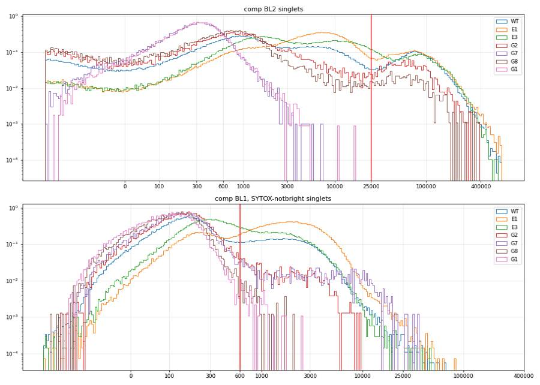
55
tool output
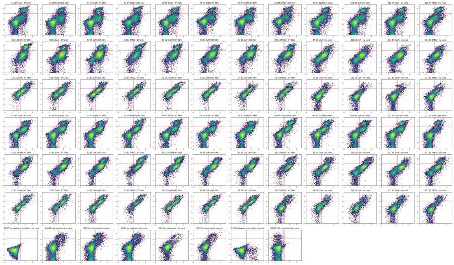
57
tool call · Bash
cd /task; python3 -I - <<'EOF'
import sys; sys.path.insert(0,'/task/work')
from load import *; import strategy as S
gs=S.build(); d=load(); rows=[]
for w,(s,df) in d.items():
res=gs.gate_sample(s); rep=res.report.set_index('gate_name')['count']
m=res.get_gate_membership('singlets')
q=df[m]; b1=(q['BL1-A']-S.K21*q['BL2-A']); b2=q['BL2-A']-S.K12*q['BL1-A']
neg=q[(b1<S.CASP_THR)&(b2<S.SYTOX_THR)]
l=lay[lay.well==w].iloc[0]
rows.append(dict(well=w,line=l.cell_line,cpt=l.camptothecin,cm=l.conditioned_media.replace(' conditioned media','').replace('no','none'),n=len(df),cells=rep['cells'],pc_cells=100*rep['cells']/len(df),sing=rep['singlets'],pc_sing=100*rep['singlets']/rep['cells'],
live=100*rep['live']/rep['singlets'],casp_live=100*rep['caspase_pos_live']/rep['live'],casp_all=100*rep['caspase_pos_all']/rep['singlets'],
healthy=100*len(neg)/rep['singlets'], n_healthy=len(neg),
negFSC=neg['FSC-A'].median(),negSSC=neg['SSC-A'].median(),negSSCW=neg['SSC-W'].median(),negFSCW=neg['FSC-W'].median(),negBL1=neg['BL1-A'].median(),negBL2=neg['BL2-A'].median(),
sat=100*((df['FSC-A']>=1.04e6)|(df['SSC-A']>=1.04e6)).mean()))
r=pd.DataFrame(rows); r.to_csv('/task/work/prelim.csv',index=False)
pd.set_option('display.width',250); pd.set_option('display.max_rows',200)
print(r.round(1).to_string())
EOF58
tool output
well line cpt cm n cells pc_cells sing pc_sing live casp_live casp_all healthy n_healthy negFSC negSSC negSSCW negFSCW negBL1 negBL2 sat 0 A1 WT 10uM WT 24hr 31328 20437 65.2 18982 92.9 87.8 20.9 30.0 69.5 13186 328312.5 191165.0 128.0 134.0 147.0 733.0 1.2 1 A2 WT 5uM WT 24hr 40169 28258 70.3 25897 91.6 91.1 23.7 30.0 69.5 17999 326527.0 203664.0 127.0 137.0 142.0 652.0 1.0 2 A3 WT 2uM WT 24hr 47337 30840 65.1 28445 92.2 90.5 23.9 30.4 68.8 19584 304813.0 206057.0 127.0 133.0 142.0 643.0 0.8 3 A4 WT DMSO WT 24hr 33079 23538 71.2 21662 92.0 86.4 31.6 40.6 59.1 12807 316812.0 188651.0 127.0 136.0 156.0 658.0 1.5 4 A5 WT 10uM WT 48hr 34963 24728 70.7 22783 92.1 88.9 25.4 33.4 66.3 15109 306249.0 197195.0 127.0 132.0 151.0 638.0 1.1 5 A6 WT 5uM WT 48hr 33431 24818 74.2 23057 92.9 90.8 23.5 30.1 69.5 16024 393559.0 209182.0 128.0 147.0 152.0 1122.0 1.5 6 A7 WT 2uM WT 48hr 36445 27130 74.4 25319 93.3 90.0 22.2 29.7 70.0 17711 383449.0 209754.0 129.0 149.0 149.0 1056.0 1.1 7 A8 WT DMSO WT 48hr 22867 17130 74.9 15985 93.3 86.4 24.9 34.8 64.9 10371 404481.0 202727.0 128.0 146.0 156.0 1129.0 2.0 8 A9 WT 10uM none 40034 24164 60.4 21942 90.8 89.0 21.9 30.3 69.5 15244 318587.0 185988.0 128.0 134.0 162.0 712.0 1.2 9 A10 WT 5uM none 42298 28326 67.0 26114 92.2 87.8 19.5 29.0 70.7 18451 319330.0 198861.0 128.0 133.0 151.0 603.0 1.2 10 A11 WT 2uM none 43376 28053 64.7 25990 92.6 87.0 20.8 30.7 68.9 17919 323629.0 199084.0 128.0 135.0 149.0 590.0 1.2 11 A12 WT DMSO none 30724 19137 62.3 17226 90.0 85.2 22.5 33.8 66.0 11368 319775.5 191519.5 127.0 133.0 161.0 777.0 1.3 12 B1 E1 10uM WT 24hr 18757 14320 76.3 13186 92.1 69.4 72.3 80.7 19.2 2536 325876.0 176247.5 124.0 138.0 312.0 1363.0 0.6 13 B2 E1 5uM WT 24hr 32477 22950 70.7 21138 92.1 85.3 72.0 76.1 23.9 5046 335419.0 188901.0 126.0 141.0 226.0 916.5 0.4 14 B3 E1 2uM WT 24hr 40067 26860 67.0 24610 91.6 83.9 77.0 80.6 19.3 4749 333258.0 181140.0 126.0 141.0 241.0 1065.0 0.3 15 B4 E1 DMSO WT 24hr 19965 13873 69.5 12462 89.8 73.5 72.3 79.6 20.4 2540 333568.5 175560.5 124.0 140.0 282.5 1248.5 1.2 16 B5 E1 10uM WT 48hr 17852 14194 79.5 13210 93.1 76.1 73.0 79.5 20.5 2713 316186.0 170743.0 124.0 135.0 296.0 1417.0 0.3 17 B6 E1 5uM WT 48hr 31705 22691 71.6 20875 92.0 84.2 72.9 77.2 22.8 4758 328258.5 183664.5 126.0 139.0 242.0 1071.5 0.4 18 B7 E1 2uM WT 48hr 35417 24161 68.2 22399 92.7 81.4 75.3 79.9 20.1 4500 338568.0 186856.0 126.0 136.0 253.0 1203.0 0.4 19 B8 E1 DMSO WT 48hr 26222 17244 65.8 15366 89.1 83.9 75.7 79.6 20.4 3137 323965.0 167412.0 124.0 140.0 262.0 1233.0 0.6 20 B9 E1 10uM none 34411 22074 64.1 20020 90.7 92.7 57.2 60.4 39.6 7937 316505.0 183659.0 125.0 139.0 244.0 1013.0 0.7 21 B10 E1 5uM none 40098 25581 63.8 23154 90.5 95.8 58.3 60.0 40.0 9253 314919.0 187426.0 125.0 139.0 237.0 955.0 0.7 22 B11 E1 2uM none 41005 24125 58.8 21943 91.0 93.4 65.6 67.9 32.1 7045 319020.0 169456.0 125.0 138.0 253.0 1109.0 0.5 23 B12 E1 DMSO none 31680 16229 51.2 14218 87.6 91.7 62.8 65.9 34.1 4855 332354.0 177030.0 126.0 139.0 260.0 1408.0 0.8 24 C1 E3 10uM WT 24hr 17681 10641 60.2 9070 85.2 82.8 55.6 63.2 36.8 3335 444184.0 296191.0 133.0 149.0 323.0 2542.0 5.2 25 C2 E3 5uM WT 24hr 25455 12775 50.2 10763 84.3 86.0 58.5 64.3 35.7 3840 386299.5 311485.0 132.0 142.0 323.0 1952.0 4.2 26 C3 E3 2uM WT 24hr 21098 12544 59.5 10992 87.6 86.6 48.1 55.0 44.9 4938 430887.0 338101.0 133.0 148.0 303.0 2305.0 5.5 27 C4 E3 DMSO WT 24hr 18113 9693 53.5 7847 81.0 83.7 56.7 63.7 36.3 2847 365500.0 272262.0 129.0 144.0 311.0 2058.0 4.7 28 C5 E3 10uM WT 48hr 18729 9641 51.5 7822 81.1 85.3 50.1 57.4 42.6 3329 395781.0 314805.0 132.0 147.0 319.0 2045.0 4.7 29 C6 E3 5uM WT 48hr 21716 11139 51.3 9219 82.8 87.9 53.4 59.1 40.9 3774 393795.5 320509.0 132.0 145.0 320.0 2077.5 4.4 30 C7 E3 2uM WT 48hr 22874 12000 52.5 10318 86.0 91.4 45.7 50.4 49.7 5124 388455.5 331869.0 132.0 144.0 308.0 1971.0 4.2 31 C8 E3 DMSO WT 48hr 18604 9881 53.1 8023 81.2 85.8 46.9 54.5 45.5 3651 399398.0 307514.0 … [8,822 more characters not shown]
60
tool call · Bash
cd /task; python3 -I - <<'EOF'
import sys; sys.path.insert(0,'/task/work')
from load import *; import strategy as S
gs=S.build(); d=load()
feats=['FSC-A','SSC-A','FSC-H','SSC-H','FSC-W','SSC-W']
H={}
for w,(s,df) in d.items():
res=gs.gate_sample(s); m=res.get_gate_membership('singlets'); q=df[m]
b1=(q['BL1-A']-S.K21*q['BL2-A']); b2=q['BL2-A']-S.K12*q['BL1-A']
neg=q[(b1<S.CASP_THR)&(b2<S.SYTOX_THR)]
X=neg[feats].values.copy(); X[:,:4]=np.log10(X[:,:4]); H[w]=X
# multinomial logistic regression via numpy (softmax), features standardized + quadratic terms
def expand(X,mu,sd):
Z=(X-mu)/sd
iu=np.triu_indices(Z.shape[1])
Q=(Z[:,:,None]*Z[:,None,:])[:,iu[0],iu[1]]
return np.hstack([np.ones((len(Z),1)),Z,Q])
def fit(Xs,ys,it=300,lr=0.5):
W=np.zeros((Xs.shape[1],3)); Y=np.eye(3)[ys]
for i in range(it):
P=Xs@W; P-=P.max(1,keepdims=True); P=np.exp(P); P/=P.sum(1,keepdims=True)
W-=lr*(Xs.T@(P-Y)/len(Xs)+1e-4*W)
return W
line={'A':0,'D':0,'B':1,'E':1,'C':2,'F':2}
rng=np.random.default_rng(0)
def run(train_rows, label):
Xs=[];ys=[]
for w in H:
if w[0] in train_rows:
X=H[w]; idx=rng.choice(len(X),min(1500,len(X)),replace=False); Xs.append(X[idx]); ys+= [line[w[0]]]*len(idx)
X=np.vstack(Xs); ys=np.array(ys); mu=X.mean(0); sd=X.std(0)
W=fit(expand(X,mu,sd),ys)
print(label)
res={}
for w in H:
if w[0] in train_rows: continue
p=expand(H[w],mu,sd)@W; cl=p.argmax(1); fr=np.bincount(cl,minlength=3)/len(cl)
# mean log posterior ratio
res[w]=fr
return res
r1=run('ABC','train ABC')
for w,fr in r1.items(): print(' ',w,lay[lay.well==w].iloc[0]['sample'],'frac WT/E1/E3 =',fr.round(2))
r2=run('DEF','train DEF')
for w,fr in r2.items(): print(' ',w,lay[lay.well==w].iloc[0]['sample'],'frac WT/E1/E3 =',fr.round(2))
EOF61
tool output
train ABC D1 WT 10uM frac WT/E1/E3 = [0.62 0.19 0.19] D2 WT 5uM frac WT/E1/E3 = [0.6 0.18 0.23] D3 WT 2uM frac WT/E1/E3 = [0.61 0.17 0.22] D4 WT DMSO frac WT/E1/E3 = [0.59 0.22 0.2 ] D5 WT 10uM frac WT/E1/E3 = [0.58 0.19 0.23] D6 WT 5uM frac WT/E1/E3 = [0.63 0.15 0.22] D7 WT 2uM frac WT/E1/E3 = [0.66 0.12 0.21] D8 WT DMSO frac WT/E1/E3 = [0.51 0.22 0.27] D9 WT 10uM frac WT/E1/E3 = [0.69 0.15 0.17] D10 WT 5uM frac WT/E1/E3 = [0.71 0.13 0.16] D11 WT 2uM frac WT/E1/E3 = [0.75 0.11 0.15] D12 WT DMSO frac WT/E1/E3 = [0.73 0.14 0.14] E1 E1 10uM frac WT/E1/E3 = [0.45 0.3 0.25] E2 E1 5uM frac WT/E1/E3 = [0.52 0.28 0.2 ] E3 E1 2uM frac WT/E1/E3 = [0.54 0.27 0.18] E4 E1 DMSO frac WT/E1/E3 = [0.45 0.28 0.27] E5 E1 10uM frac WT/E1/E3 = [0.41 0.31 0.28] E6 E1 5uM frac WT/E1/E3 = [0.54 0.25 0.21] E7 E1 2uM frac WT/E1/E3 = [0.55 0.23 0.22] E8 E1 DMSO frac WT/E1/E3 = [0.33 0.27 0.39] E9 E1 10uM frac WT/E1/E3 = [0.54 0.26 0.2 ] E10 E1 5uM frac WT/E1/E3 = [0.56 0.26 0.18] E11 E1 2uM frac WT/E1/E3 = [0.52 0.26 0.22] E12 E1 DMSO frac WT/E1/E3 = [0.62 0.19 0.19] F1 E3 10uM frac WT/E1/E3 = [0.11 0.06 0.83] F2 E3 5uM frac WT/E1/E3 = [0.12 0.08 0.81] F3 E3 2uM frac WT/E1/E3 = [0.12 0.05 0.82] F4 E3 DMSO frac WT/E1/E3 = [0.14 0.07 0.79] F5 E3 10uM frac WT/E1/E3 = [0.12 0.05 0.83] F6 E3 5uM frac WT/E1/E3 = [0.12 0.05 0.83] F7 E3 2uM frac WT/E1/E3 = [0.1 0.05 0.85] F8 E3 DMSO frac WT/E1/E3 = [0.11 0.02 0.87] F9 E3 10uM frac WT/E1/E3 = [0.26 0.08 0.65] F10 E3 5uM frac WT/E1/E3 = [0.28 0.06 0.66] F11 E3 2uM frac WT/E1/E3 = [0.29 0.04 0.66] F12 E3 DMSO frac WT/E1/E3 = [0.32 0.06 0.62] G1 WT no treatment (no stain) frac WT/E1/E3 = [0.42 0.28 0.3 ] G2 WT no treatment frac WT/E1/E3 = [0.75 0.09 0.15] G3 E3 no treatment frac WT/E1/E3 = [0.75 0.12 0.14] G4 E3 no treatment frac WT/E1/E3 = [0.73 0.12 0.15] G5 E1 no treatment frac WT/E1/E3 = [0.22 0.07 0.71] G6 E1 no treatment frac WT/E1/E3 = [0.26 0.06 0.68] G7 WT (caspase stain only) frac WT/E1/E3 = [0.54 0.22 0.23] G8 WT (L/D stain only) frac WT/E1/E3 = [0.64 0.17 0.2 ] train DEF A1 WT 10uM frac WT/E1/E3 = [0.31 0.64 0.06] A2 WT 5uM frac WT/E1/E3 = [0.37 0.54 0.09] A3 WT 2uM frac WT/E1/E3 = [0.45 0.46 0.09] A4 WT DMSO frac WT/E1/E3 = [0.32 0.62 0.07] A5 WT 10uM frac WT/E1/E3 = [0.38 0.55 0.07] A6 WT 5uM frac WT/E1/E3 = [0.17 0.7 0.13] A7 WT 2uM frac WT/E1/E3 = [0.2 0.67 0.13] A8 WT DMSO frac WT/E1/E3 = [0.14 0.75 0.11] A9 WT 10uM frac WT/E1/E3 = [0.33 0.61 0.05] A10 WT 5uM frac WT/E1/E3 = [0.4 0.55 0.05] A11 WT 2uM frac WT/E1/E3 = [0.39 0.55 0.05] A12 WT DMSO frac WT/E1/E3 = [0.33 0.61 0.06] B1 E1 10uM frac WT/E1/E3 = [0.11 0.79 0.09] B2 E1 5uM frac WT/E1/E3 = [0.19 0.72 0.09] B3 E1 2uM frac WT/E1/E3 = [0.14 0.79 0.07] B4 E1 DMSO frac WT/E1/E3 = [0.12 0.8 0.08] B5 E1 10uM frac WT/E1/E3 = [0.13 0.82 0.06] B6 E1 5uM frac WT/E1/E3 = [0.21 0.72 0.07] B7 E1 2uM frac WT/E1/E3 = [0.18 0.77 0.05] B8 E1 DMSO frac WT/E1/E3 = [0.1 0.86 0.05] B9 E1 10uM frac WT/E1/E3 = [0.23 0.69 0.09] B10 E1 5uM frac WT/E1/E3 = [0.23 0.68 0.09] B11 E1 2uM frac WT/E1/E3 = [0.16 0.78 0.06] B12 E1 DMSO frac WT/E1/E3 = [0.14 0.81 0.05] C1 E3 10uM frac WT/E1/E3 = [0.11 0.44 0.46] C2 E3 5uM frac WT/E1/E3 = [0.08 0.31 0.61] C3 E3 2uM frac WT/E1/E3 = [0.09 0.26 0.65] C4 E3 DMSO frac WT/E1/E3 = [0.08 0.42 0.49] C5 E3 10uM frac WT/E1/E3 = [0.08 0.33 0.59] C6 E3 5uM frac WT/E1/E3 = [0.08 0.28 0.64] C7 E3 2uM frac WT/E1/E3 = [0.08 0.24 0.68] C8 E3 DMSO frac WT/E1/E3 = [0.08 0.34 0.58] C9 E3 10uM frac WT/E1/E3 = [0.17 0.4 0.43] C10 E3 5uM frac WT/E1/E3 = [0.2 0.32 0.48] C11 E3 2uM frac WT/E1/E3 = [0.27 0.26 0.47] C12 E3 DMSO frac WT/E1/E3 = [0.2 0.39 0.42] G1 WT no treatment (no stain) frac WT/E1/E3 = [0.11 0.78 0.11] G2 WT no treatment frac WT/E1/E3 = [0.45 0.48 0.07] G3 E3 no treatment frac WT/E1/E3 = [0.39 0.56 0.04] G4 E3 no treatment frac WT/E1/E3 = [0.38 0.57 0.04] G5 E1 no treatment frac WT/E1/E3 = [0.19 0.33 0.48] G6 E1 no treatment frac WT/E1/E3 = [0.22 0.33 0.45] G7 WT (caspase stain only) frac WT/E1/E3 = [0.25 0.69 0.07] G8 WT (L/D stain only) frac WT/E1/E3 = [0.37 0.57 0.06]
63
agent
Thresholds validated on the controls; scatter shows G5/G6 are E3-like and G3/G4 are not, so those labels look swapped. Now checking acquisition stability (flow rate over time) for clogs or dry runs.
64
tool call · Bash
cd /task; python3 -I - <<'EOF'
import sys; sys.path.insert(0,'/task/work')
from load import *
import matplotlib; matplotlib.use('Agg'); import matplotlib.pyplot as plt
d=load()
fig,axs=plt.subplots(7,12,figsize=(36,18))
for ax in axs.flat: ax.axis('off')
rows=[]
for w,(s,df) in d.items():
t=df['Time'].values*float(s.get_metadata()['timestep']) if df['Time'].max()>1000 else df['Time'].values
r='ABCDEFG'.index(w[0]); c=int(w[1:])-1; ax=axs[r,c]; ax.axis('on')
T=t.max(); nb=34
h,e=np.histogram(t,bins=nb,range=(0,T))
ax.plot(e[:-1],h,drawstyle='steps-post'); ax.set_ylim(0,None); ax.set_title(f'{w} n={len(t)} T={T:.1f}',fontsize=9)
ax2=ax.twinx();
# median FSC & BL1 over time
idx=np.digitize(t,e[1:-1]);
mf=[np.median(df['FSC-A'].values[idx==i]) if (idx==i).sum()>5 else np.nan for i in range(nb)]
ax2.plot(e[:-1],mf,color='r',lw=.7); ax2.set_ylim(0,6e5); ax2.tick_params(labelsize=5)
hh=h[1:-1] # skip first/last bins
med=np.median(hh)
rows.append(dict(well=w,T=T,rate_med=med/(T/nb),min_ratio=hh.min()/med,max_ratio=hh.max()/med,cv=hh.std()/hh.mean(),first=h[0]/med,last=h[-1]/med,
first_half=h[:nb//2].sum()/h.sum(), maxgap=np.diff(np.sort(t)).max(), mono=bool(np.all(np.diff(t)>=0)),
fsc_drift=np.nanmedian(mf[-8:])/np.nanmedian(mf[:8])))
fig.tight_layout(); fig.savefig('/task/work/g_time.png',dpi=55)
r=pd.DataFrame(rows); pd.set_option('display.width',250); pd.set_option('display.max_rows',200)
print(r.round(3).to_string()); r.to_csv('/task/work/time_qc.csv',index=False)
EOF65
tool output
well T rate_med min_ratio max_ratio cv first last first_half maxgap mono fsc_drift 0 A1 15.980 1979.787 0.759 1.249 0.126 0.843 0.824 0.499 0.010 True 0.999 1 A2 16.706 2391.356 0.801 1.283 0.134 0.844 0.675 0.500 0.006 True 1.005 2 A3 16.851 2720.847 0.855 1.346 0.132 0.895 0.570 0.496 0.007 True 1.024 3 A4 16.632 1941.017 0.833 1.442 0.148 0.724 0.997 0.485 0.012 True 1.056 4 A5 16.749 2080.721 0.789 1.401 0.161 0.780 0.580 0.488 0.035 True 0.990 5 A6 15.660 2068.008 0.813 1.314 0.151 0.887 0.863 0.479 0.006 True 0.967 6 A7 16.841 2162.223 0.715 1.292 0.163 0.716 0.793 0.457 0.005 True 1.029 7 A8 15.832 1446.374 0.686 1.397 0.176 0.659 0.690 0.473 0.009 True 0.960 8 A9 16.671 2410.653 0.818 1.428 0.143 0.843 0.480 0.492 0.008 True 0.993 9 A10 16.647 2514.207 0.810 1.348 0.149 0.763 0.319 0.499 0.013 True 1.007 10 A11 16.621 2637.808 0.868 1.207 0.084 0.918 0.213 0.509 0.012 True 1.046 11 A12 15.960 1938.596 0.780 1.208 0.093 0.924 0.867 0.517 0.017 True 1.104 12 B1 16.702 1127.769 0.520 1.386 0.162 0.774 0.099 0.514 0.029 True 1.143 13 B2 15.827 1984.962 0.790 1.378 0.168 0.697 0.971 0.476 0.005 True 1.046 14 B3 16.738 2340.065 0.789 1.382 0.136 0.862 0.330 0.495 0.010 True 1.062 15 B4 15.884 1194.409 0.581 1.493 0.221 0.769 0.740 0.487 0.022 True 1.070 16 B5 16.773 1059.143 0.766 1.418 0.165 0.833 0.172 0.499 0.041 True 1.068 17 B6 16.655 1906.695 0.459 1.400 0.173 0.884 0.104 0.517 0.038 True 0.999 18 B7 15.885 2130.752 0.790 1.399 0.159 0.804 1.067 0.488 0.005 True 1.075 19 B8 16.718 1556.825 0.900 1.279 0.104 0.901 0.225 0.515 0.022 True 1.152 20 B9 15.809 2099.057 0.827 1.314 0.134 0.846 1.062 0.491 0.007 True 1.023 21 B10 16.698 2423.045 0.284 1.310 0.186 0.888 0.087 0.513 0.029 True 1.026 22 B11 16.829 2504.189 0.393 1.261 0.148 0.919 0.110 0.519 0.023 True 0.972 23 B12 15.942 1953.582 0.820 1.290 0.116 0.927 0.954 0.505 0.005 True 0.950 24 C1 16.524 1103.909 0.647 1.370 0.187 0.669 0.168 0.510 0.027 True 1.114 25 C2 16.788 1478.437 0.699 1.415 0.172 0.825 0.771 0.474 0.009 True 1.310 26 C3 15.902 1272.167 0.760 1.472 0.207 0.699 0.995 0.471 0.010 True 1.041 27 C4 16.821 995.482 0.810 1.574 0.193 0.881 1.017 0.462 0.010 True 1.265 28 C5 16.826 1138.654 0.252 1.359 0.212 0.893 0.078 0.538 0.093 True 0.799 29 C6 16.470 1356.284 0.303 1.397 0.192 0.878 0.122 0.520 0.046 True 0.909 30 C7 16.593 1372.868 0.309 1.428 0.208 0.846 0.115 0.522 0.026 True 0.908 31 C8 16.603 1102.753 0.349 1.465 0.195 0.966 0.095 0.515 0.064 True 0.951 32 C9 15.839 1370.604 0.835 1.455 0.170 0.913 1.024 0.493 0.008 True 0.973 33 C10 16.533 989.173 0.339 1.387 0.212 0.909 0.096 0.526 0.100 True 0.916 34 C11 16.477 1213.328 0.213 1.432 0.237 1.017 0.049 0.543 0.061 True 0.956 35 C12 16.726 1373.132 0.693 1.269 0.156 0.995 0.585 0.513 0.010 True 0.861 36 D1 16.622 1857.298 0.237 1.358 0.209 0.793 0.045 0.538 0.073 True 1.000 37 D2 16.821 2442.720 0.765 1.421 0.188 0.755 0.741 0.477 0.005 True 1.032 38 D3 15.944 2735.951 0.765 1.396 0.155 0.782 1.118 0.482 0.005 True 1.039 39 D4 16.797 1586.950 0.105 1.412 0.256 0.899 0.015 0.561 0.117 True 0.997 40 D5 16.767 1665.832 0.706 1.469 0.182 0.797 0.568 0.499 0.014 True 0.990 41 D6 16.508 2079.174 0.138 1.273 0.205 0.828 0.047 0.537 0.082 True 0.996 42 D7 16.373 2461.797 0.097 1.433 0.272 0.828 0.017 0.543 0.138 True 0.942 43 D8 16.813 1629.929 0.679 1.382 0.176 0.808 0.426 0.512 0.019 True 0.838 44 D9 16.725 2235.157 0.115 1.422 0.252 0.859 0.005 0.562 0.388 True 0.970 45 D10 16.159 2435.485 0.756 1.194 0.096 0.891 0.460 0.504 0.022 True 1.079 46 D11 16.335 2780.777 0.162 1.314 0.205 0.885 0.047 0.540 0.064 True 1.015 47 D12 16.766 1680.126 0.684 1.475 0.193 0.886 0.336 0.511 0.023 True 0.985 48 E1 16.730 1109.623 0.755 1.397 0.182 0.793 0.275 0.492 0.029 True 1.084 49 E2 16.504 2253.757 0.162 1.333 0.215 0.816 0.043 0.533 0.054 True 0.917 50 E3 16.094 2496.023 0.146 1.313 0.216 0.822 0.030 0.535 0.058 True 0.975 51 E4 15.961 1199.298 0.188 1.426 0.221 0.901 0.048 0.541 0.108 True 0.991 52 E5 16.600 1133.675 0.762 1.462 0.177 0.867 0.215 0.510 0.032 True 1.009 53 E6 16.712 1914.433 0.870 1.276 0.113 0.814 0.794 0.475 0.006 True 1.103 54 E7 16.813 2190.091 0.849 1.357 0.143 0.908 0.832 0.474 0.005 True 1.004 55 E8 15.873 986.392 0.764 1.270 0.125 0.906 0 … [2,585 more characters not shown]
66
tool call · Read
{
"file_path": "/task/work/g_time.png"
}67
tool output
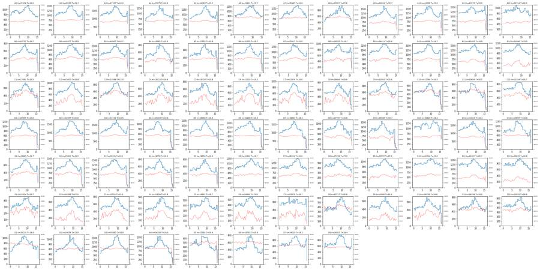
69
tool call · Bash
cd /task; python3 -I - <<'EOF'
import sys; sys.path.insert(0,'/task/work')
from load import *; import strategy as S
gs=S.build(); d=load(); rows=[]
for w,(s,df) in d.items():
t=df['Time'].values; T=t.max()
res=gs.gate_sample(s); sing=res.get_gate_membership('singlets'); live=res.get_gate_membership('live'); cp=res.get_gate_membership('caspase_pos_live'); cells=res.get_gate_membership('cells')
h,e=np.histogram(t,bins=np.arange(0,T+0.25,0.25)); med=np.median(h)
low=h<0.3*med
# trailing low duration
k=0
for x in h[::-1]:
if x<0.5*med: k+=1
else: break
out=dict(well=w,T=T,trail_low_s=k*0.25,n_trail=int(h[len(h)-k:].sum()) if k else 0,low_bins_mid=int(low[:len(h)-k].sum()))
for i,(a,b) in enumerate([(0,T/3),(T/3,2*T/3),(2*T/3,T+1)]):
m=(t>=a)&(t<b)
out[f'cells%_{i}']=100*cells[m].mean(); out[f'casp_{i}']=100*(cp&m).sum()/max(1,(live&m).sum()); out[f'live_{i}']=100*(live&m).sum()/max(1,(sing&m).sum())
rows.append(out)
r=pd.DataFrame(rows); pd.set_option('display.width',250); pd.set_option('display.max_rows',200)
print(r.round(1).to_string())
r['dc']=r[['casp_0','casp_1','casp_2']].max(1)-r[['casp_0','casp_1','casp_2']].min(1)
print(r.dc.describe()); print(r.sort_values('dc').tail(8)[['well','casp_0','casp_1','casp_2']])
r.to_csv('/task/work/time_thirds.csv',index=False)
EOF70
tool output
well T trail_low_s n_trail low_bins_mid cells%_0 casp_0 live_0 cells%_1 casp_1 live_1 cells%_2 casp_2 live_2 0 A1 16.0 0.0 0 0 64.7 21.0 86.9 67.3 20.1 88.0 63.2 21.7 88.4 1 A2 16.7 0.2 185 0 69.2 24.2 91.4 72.6 23.6 91.1 68.6 23.3 90.7 2 A3 16.9 0.5 419 0 63.2 24.7 90.5 68.7 23.2 90.0 62.6 24.2 91.1 3 A4 16.6 0.0 0 0 69.2 31.7 86.5 73.4 31.6 86.8 70.3 31.5 85.9 4 A5 16.7 0.2 158 0 69.5 25.2 89.3 73.5 25.7 88.6 68.3 25.2 89.0 5 A6 15.7 0.0 0 0 71.6 23.8 91.1 76.2 23.6 90.0 74.3 22.9 91.5 6 A7 16.8 0.2 149 0 72.2 22.3 90.8 75.5 22.5 89.4 75.1 22.0 89.8 7 A8 15.8 0.2 80 0 73.3 26.7 87.2 75.7 24.5 85.7 75.4 23.9 86.7 8 A9 16.7 0.2 110 0 58.0 22.0 89.7 63.8 22.0 88.4 58.3 21.8 88.9 9 A10 16.6 0.5 247 0 64.7 19.7 87.8 70.9 19.5 87.6 64.0 19.4 88.1 10 A11 16.6 0.8 483 0 62.2 20.9 86.9 66.6 20.6 86.9 65.0 20.8 87.3 11 A12 16.0 0.0 0 0 60.2 22.4 85.4 63.0 22.3 85.3 63.6 23.0 84.8 12 B1 16.7 0.8 129 0 74.9 73.2 70.4 77.9 71.7 69.4 75.8 72.1 68.3 13 B2 15.8 0.2 171 0 67.6 72.0 85.8 74.2 72.0 84.6 69.0 72.1 85.7 14 B3 16.7 0.5 371 0 63.7 77.5 83.9 70.8 76.6 83.7 65.6 77.0 84.1 15 B4 15.9 0.2 135 0 67.0 73.5 72.6 71.7 72.5 72.3 68.8 70.8 76.2 16 B5 16.8 0.8 104 0 78.1 73.1 76.3 81.5 72.5 74.7 78.3 73.7 78.0 17 B6 16.7 1.0 383 0 71.0 72.9 84.0 74.0 73.4 84.2 68.7 72.2 84.3 18 B7 15.9 0.0 0 0 64.5 75.9 82.3 72.6 74.9 80.1 66.2 75.3 82.5 19 B8 16.7 0.5 164 0 63.8 75.4 84.1 68.1 75.8 83.8 64.9 75.9 83.9 20 B9 15.8 0.2 98 0 62.0 56.9 93.3 67.1 57.1 92.1 62.7 57.8 92.8 21 B10 16.7 1.0 386 0 61.7 58.0 95.9 67.1 58.2 95.8 61.4 58.7 95.7 22 B11 16.8 1.0 372 0 57.9 65.1 93.2 61.7 65.3 93.5 56.1 66.8 93.5 23 B12 15.9 0.0 0 0 49.9 62.8 91.2 54.9 63.3 91.5 48.0 62.1 92.7 24 C1 16.5 0.8 101 0 57.7 55.2 83.6 63.0 55.1 81.8 58.8 56.7 83.4 25 C2 16.8 0.2 57 0 47.1 59.5 85.9 54.0 58.3 85.9 48.3 57.9 86.3 26 C3 15.9 0.0 0 0 54.9 47.7 87.4 62.9 48.3 85.9 59.1 48.2 86.9 27 C4 16.8 0.2 89 0 49.2 58.0 84.0 56.5 54.7 82.2 53.6 58.0 85.4 28 C5 16.8 1.2 231 0 49.3 49.8 85.7 56.3 50.0 84.4 46.5 50.8 86.7 29 C6 16.5 1.0 281 0 49.3 53.3 88.6 55.0 54.1 86.6 48.1 52.4 89.1 30 C7 16.6 1.0 195 0 49.4 43.5 91.5 56.9 46.8 91.0 49.1 46.5 92.2 31 C8 16.6 1.0 159 0 51.2 46.9 86.8 57.0 45.8 85.1 49.6 48.8 85.7 32 C9 15.8 0.2 66 0 56.9 23.2 92.7 62.6 25.4 93.0 57.2 24.3 94.1 33 C10 16.5 1.0 104 0 63.9 16.6 95.8 66.8 16.4 95.3 61.6 15.9 95.4 34 C11 16.5 1.0 156 0 64.5 15.4 96.6 68.7 14.4 96.2 64.0 14.6 95.6 35 C12 16.7 0.2 101 0 57.5 23.9 95.7 63.3 22.6 94.9 56.1 22.6 96.1 36 D1 16.6 1.0 167 0 64.3 36.0 89.4 69.0 34.7 88.7 62.6 34.8 89.2 37 D2 16.8 0.2 109 0 64.6 27.3 92.0 70.5 27.0 90.7 66.4 26.5 90.7 38 D3 15.9 0.0 0 0 62.1 30.4 91.0 69.4 29.7 90.2 64.0 29.2 90.7 39 D4 16.8 1.5 222 0 68.9 37.1 82.8 70.6 36.5 82.4 66.5 36.0 83.7 40 D5 16.8 0.5 176 0 66.2 27.2 86.7 70.7 25.5 86.4 65.1 27.4 88.0 41 D6 16.5 1.2 203 0 68.0 25.3 90.6 70.9 25.6 90.4 65.4 26.2 91.5 42 D7 16.4 1.2 264 0 66.1 24.3 89.0 72.0 23.4 88.2 64.5 24.5 89.0 43 D8 16.8 0.5 139 0 61.6 29.9 80.7 66.8 32.2 78.9 59.0 33.1 80.4 44 D9 16.7 1.5 465 0 57.6 29.1 87.3 61.6 28.2 87.3 55.6 28.6 87.3 45 D10 16.2 0.2 94 0 65.9 20.8 87.4 66.2 22.1 87.5 68.4 … [4,913 more characters not shown]
72
tool call · Bash
cd /task; python3 -I - <<'EOF'
import pandas as pd, numpy as np
r=pd.read_csv('/task/work/prelim.csv')
r=r[r.well.str[0].isin(list('ABCDEF'))].copy()
r['cmb']=np.where(r.cm=='none','none','CM')
pd.set_option('display.width',250)
for v in ['n','sing','pc_cells','live','casp_live','casp_all','healthy']:
print(v); print(r.pivot_table(index=['line','cmb'],columns='cpt',values=v,aggfunc='mean')[['DMSO','2uM','5uM','10uM']].round(1))
print(r.pivot_table(index=['line','cm'],columns='cpt',values='casp_live',aggfunc=lambda x:'/'.join(f'{v:.1f}' for v in x))[['DMSO','2uM','5uM','10uM']])
# by plate-row (11-30 map alternative: rows A-C=24h, D-F=48h)
r['row']=r.well.str[0]
print(r[r.cmb=='CM'].groupby(['line','row']).casp_live.agg(['mean','std','count']).round(1))
print(r[r.cmb=='CM'].groupby(['line','cm']).casp_live.agg(['mean','std','count']).round(1))
print(r.groupby(['line','cmb']).casp_live.agg(['mean','std','count','min','max']).round(1))
EOF73
tool output
n
cpt DMSO 2uM 5uM 10uM
line cmb
E1 CM 20158.0 38256.2 33081.2 18586.0
none 29175.0 42196.0 40851.0 32004.0
E3 CM 15567.0 20724.8 20025.2 15513.8
none 19378.0 19311.0 16295.0 19764.0
WT CM 27459.2 41624.0 37106.2 31151.0
none 29861.5 43347.5 40361.5 37809.5
sing
cpt DMSO 2uM 5uM 10uM
line cmb
E1 CM 12410.8 23286.0 21182.2 12709.8
none 13331.0 21912.5 22990.5 17676.5
E3 CM 7477.5 9731.2 8385.0 7165.2
none 10905.0 11738.0 8480.5 9347.0
WT CM 17459.5 26278.2 23986.2 19493.8
none 19564.5 26178.5 25007.0 20367.5
pc_cells
cpt DMSO 2uM 5uM 10uM
line cmb
E1 CM 69.8 66.2 69.6 75.2
none 51.7 57.3 62.3 61.4
E3 CM 56.5 53.6 49.2 54.7
none 62.0 65.0 57.7 52.5
WT CM 69.5 68.3 70.2 67.4
none 71.5 64.9 66.9 59.6
live
cpt DMSO 2uM 5uM 10uM
line cmb
E1 CM 74.8 83.3 83.4 73.3
none 89.1 93.5 93.7 90.2
E3 CM 80.2 82.7 81.6 80.8
none 92.1 91.1 91.6 89.0
WT CM 83.9 89.9 90.9 88.2
none 87.0 86.9 87.6 88.1
casp_live
cpt DMSO 2uM 5uM 10uM
line cmb
E1 CM 76.5 77.2 74.8 73.2
none 58.4 67.4 59.1 60.5
E3 CM 42.2 46.0 54.1 48.6
none 19.2 14.7 19.5 28.4
WT CM 31.2 25.0 24.9 27.0
none 15.9 21.1 20.5 25.3
casp_all
cpt DMSO 2uM 5uM 10uM
line cmb
E1 CM 82.3 81.0 79.0 80.3
none 63.0 69.5 61.6 64.3
E3 CM 53.2 55.3 62.6 58.6
none 25.6 22.2 26.0 36.1
WT CM 42.1 32.2 31.5 35.4
none 26.6 31.3 30.2 34.0
healthy
cpt DMSO 2uM 5uM 10uM
line cmb
E1 CM 17.7 19.0 21.0 19.7
none 37.0 30.5 38.4 35.7
E3 CM 46.7 44.6 37.3 41.4
none 74.3 77.6 73.9 63.8
WT CM 57.8 67.5 68.3 64.4
none 73.2 68.6 69.6 65.9
cpt DMSO 2uM 5uM 10uM
line cm
E1 WT 24hr 72.3/80.2 77.0/78.5 72.0/77.8 72.3/72.9
WT 48hr 75.7/77.8 75.3/77.8 72.9/76.5 73.0/74.4
none 62.8/53.9 65.6/69.1 58.3/59.9 57.2/63.8
E3 WT 24hr 56.7/53.5 48.1/45.0 58.5/54.7 55.6/43.4
WT 48hr 46.9/11.5 45.7/45.2 53.4/49.9 50.1/45.4
none 23.0/15.4 14.8/14.7 16.4/22.6 24.4/32.4
WT WT 24hr 31.6/36.6 23.9/29.7 23.7/26.9 20.9/35.1
WT 48hr 24.9/31.7 22.2/23.9 23.5/25.6 25.4/26.5
none 22.5/9.3 20.8/21.4 19.5/21.5 21.9/28.6
mean std count
line row
E1 B 73.8 1.9 8
E 77.0 2.3 8
E3 C 51.9 4.8 8
F 43.6 13.6 8
WT A 24.5 3.2 8
D 29.5 4.6 8
mean std count
line cm
E1 WT 24hr 75.4 3.3 8
WT 48hr 75.4 1.9 8
E3 WT 24hr 51.9 5.7 8
WT 48hr 43.5 13.3 8
WT WT 24hr 28.6 5.7 8
WT 48hr 25.5 2.9 8
mean std count min max
line cmb
E1 CM 75.4 2.6 16 72.0 80.2
none 61.3 4.9 8 53.9 69.1
E3 CM 47.7 10.8 16 11.5 58.5
none 20.5 6.3 8 14.7 32.4
WT CM 27.0 4.6 16 20.9 36.6
none 20.7 5.3 8 9.3 28.675
thinking
The caspase result is clear: CM raises caspase levels in both knockout lines instead of lowering them, and there's no camptothecin dose-response. I'm loading the charting guidance before building the final figure.
76
tool call · Skill
{
"skill": "dataviz"
}77
tool output
Launching skill: dataviz
78
tool call · Bash
cd /tmp/claude-0/bundled-skills/2.1.322/38fd9308e2c51c3f2d3db1fd8c09cfe9/dataviz; cat references/palette.md | head -120; echo ----; sed -n 1,80p references/choosing-a-form.md
79
tool output
# Reference palette
This is the **reference instance** of the data-viz method: every parameter the
method needs, filled in with a validated default palette. The rest of the skill
is system-agnostic - **to target your brand, substitute this file's values** and
re-run the validator. Nothing else changes.
## How to use these values
Everything below is plain hex. In an HTML chart, **define the slots you use as
CSS custom properties in a local `<style>` block** at the top of the file, then
reference them by role throughout - so the light/dark values swap in one place,
and the chart body is written against roles rather than raw hex:
```css
.viz-root {
color-scheme: light;
--surface-1: #fcfcfb; /* chart surface */
--text-primary: #0b0b0b;
--text-secondary: #52514e;
--series-1: #2a78d6; /* categorical slot 1 */
/* ...only the roles this chart uses */
}
@media (prefers-color-scheme: dark) {
:root:where(:not([data-theme="light"])) .viz-root {
color-scheme: dark;
--surface-1: #1a1a19;
--text-primary: #f0efec;
--text-secondary: #c3c2b7;
--series-1: #3987e5;
}
}
:root[data-theme="dark"] .viz-root {
color-scheme: dark;
--surface-1: #1a1a19;
--text-primary: #f0efec;
--text-secondary: #c3c2b7;
--series-1: #3987e5;
}
```
Declare the dark values under both scopes as above - the media query covers
the OS setting; the `data-theme` scope covers the viewer's theme toggle,
which must win both ways (the `:not(...)` guard lets a light stamp beat
OS-dark; `:where()` keeps the media block below the toggle scope).
## Categorical palette
Both modes are selected. The dark column is the same eight hues stepped for the
dark surface, not a separate palette:
| Slot | Hue | Light | Dark |
|------|-----|-------|------|
| 1 | blue | `#2a78d6` | `#3987e5` |
| 2 | orange | `#eb6834` | `#d95926` |
| 3 | aqua | `#1baf7a` | `#199e70` |
| 4 | yellow | `#eda100` | `#c98500` |
| 5 | magenta | `#e87ba4` | `#d55181` |
| 6 | green | `#008300` | `#008300` |
| 7 | violet | `#6250d6` | `#9085e9` |
| 8 | red | `#e34948` | `#e66767` |
This order passes every hard gate in both modes on the default *adjacent*
pairlist (stacks, bars, lines): worst adjacent CVD Delta E 9.1 light / 8.4 dark
(OKLab ×100, >=8 target), worst adjacent normal-vision Delta E 19.6 light / 19.3
dark (>=15 floor). Under `--pairs all` (scatter, bubble, choropleth, small
multiples) the full eight cannot clear the floors - with all 28 pairs in
play no ordering can (the pairlist no longer depends on order), and
re-stepping is off the table by the documented-palette rule - so those
chart forms carry a series cap: **the first three slots validate all-pairs
in both modes** (worst pair CVD Delta E 9.2 light / 9.4 dark, normal-vision 24.0
light / 20.9 dark - clear of the CVD warn band). Past three, fold to "Other" or
facet: the fourth slot puts yellow and orange on screen
together, and that pair fails the all-pairs floors (normal-vision 13.7
light; CVD 4.8 dark). Three light-mode slots (magenta, yellow, aqua)
sit below 3:1 contrast on the light surface: the **relief rule** applies (ship
visible direct labels or the table view). The dark steps were chosen for the
dark band (OKLCH L ~ 0.48-0.67, >= 3:1 on the dark surface) and validated as a
set. (Ordering history: adopted July 2026 for its more harmonious opening -
the same eight hues and steps as its predecessor, re-ordered, zero hex
changes. The predecessor validated its first FOUR slots all-pairs, with its
dark run in the 6-8 CVD warn band, so secondary encoding was required there;
this order deliberately trades that fourth slot - yellow now sits beside orange -
for better-looking leading colors. Revisit the trade if yellow<->orange
confusion shows up in real charts with four or more series; undoing it is a
pure re-order. Light slot 7 has since been lightened, `#4a3aa7` -> `#6250d6`
(August 2026); the adjacent-pair figures above are unchanged by that move, the
non-adjacent blue<->violet pair now sits below both floors under `--pairs all`
(normal-vision 10.5, CVD 4.5 - inside the range the series cap already
excludes), and the order enumeration was run with the earlier value.) When you
swap in your own ramps, hold your palette to the full gate.
The slot **ordering** is the CVD-safety mechanism, not cosmetic - candidate
orderings were enumerated and only those clearing every adjacent gate in both
modes kept (see `color-formula.md` § Themes); this default is one of the
passing orders, picked among them for its opening colors. When you swap in
your brand's hues, do the same: run the validator on candidate orderings and
choose only among the passing ones.
## Sequential hue
Default single hue: **blue**, light->dark. When two sequential contexts appear at
once, the second takes the next categorical slot's hue (orange), each as its own
one-hue ramp.
| step | hex | step | hex | step | hex | step | hex |
|---|---|---|---|---|---|---|---|
| 100 | `#cde2fb` | 250 | `#86b6ef` | 400 | `#3987e5` | 550 | `#1c5cab` |
| 150 | `#b7d3f6` | 300 | `#6da7ec` | 450 | `#2a78d6` | 600 | `#184f95` |
| 200 | `#9ec5f4` | 350 | `#5598e7` | 500 | `#256abf` | 650 | `#104281` |
| | | | | | | 700 | `#0d366b` |
The full 100->700 range is for **sequential** encoding (continuous magnitude -
heatmaps, choropleths) where the lightest step means "near zero" and is allowed
to recede toward the surface. For an **ordinal** ramp (discrete ordered marks -
funnel stages, tiers - validated with `--ordinal`), the step nearest the surface
must still clear 2:1: on light, start no lighter than **step 250** (`#86b6ef`,
2.06:1); on dark, go no darker than **step 600** (`#184f95`, 2.15:1).
## Diverging pair
----
# Choosing a form
Decide this **before** color. The data's job picks the form - and sometimes the
right form is not a chart.
## Is it even a chart?
| The data is... | Use | Not |
|---|---|---|
| A single current value (+ maybe a trend) | **Stat tile** (value + delta
… [4,640 more characters not shown]81
tool call · Bash
cd /tmp/claude-0/bundled-skills/2.1.322/38fd9308e2c51c3f2d3db1fd8c09cfe9/dataviz; node scripts/validate_palette.js "#2a78d6,#eb6834,#1baf7a" --mode light --pairs all 2>&1 | tail -25; sed -n 1,60p references/anti-patterns.md
82
tool output
/bin/bash: line 1: node: command not found # Anti-patterns - what goes wrong Check every chart against this list. If your output matches an entry, it is wrong - fix it before shipping. These are real failure modes, each caught in shipping dashboards. ## Color & encoding **Bad: Dual-axis charts (two y-scales on one plot).** Why it misleads: the alignment of the two scales is arbitrary, so the chart invents a correlation that isn't in the data. Real example: an "Adoption" chart plotting Users (0-30k) against Sessions (0-800k) - a reviewer flagged it as looking "hallucinated." Good: Do instead: two charts, small multiples, or index both series to a common base (=100 at t0) on **one** axis. **Bad: Recolor-on-filter.** Assigning colors by current rank, so filtering out a series repaints the survivors. Why: a reader who learned "Acme is blue" is now misled. Good: Color follows the entity, not its row number. Survivors keep their hue. **Bad: Cycling / generating hues past 8.** A 9th categorical color, generated or reused. Why: indistinguishable from an existing slot under CVD; breaks the order check. Good: Fold the tail into "Other," facet into small multiples, or use composite encoding. **Bad: Eyeballing colorblind-safety.** "These look different enough." Good: Run `scripts/validate_palette.js`. Adjacent Delta E >= 8 (OKLab ×100), or 6-8 WITH secondary encoding. **Bad: A value-ramp on nominal categories.** Coloring each bar darker-where-bigger when the categories have no natural order (products, teams, endpoints). Why: it double-encodes bar length as hue, burns the only free channel on information the chart already shows, and fails the categorical checks by design (a ramp spans the lightness band and drops below the chroma floor). Good: One series -> one color (slot 1) for every bar. Ordered categories (funnel, tiers, age bands) -> the ordinal ramp, validated with `--ordinal`. **Bad: Rainbow / non-neighbor sequential.** A multi-hue ramp for magnitude. Good: One hue, light->dark. (Analogous neighbors or semantic heat are the only multi-hue sequential exceptions, always with a scale legend.) **Bad: A hue at the diverging midpoint, or two cool hues as the two poles.** Why: the midpoint must read as "nothing"; poles must read as opposite. blue<->aqua fails this (both cool); blue<->red or blue<->orange succeed (warm/cool). Good: Two hues that read as opposite + a neutral gray midpoint. **Bad: Status color used for a non-status series** (or a series color used for status). Good: Status tokens only when the color *means* good/bad; categorical when it's identity. ## Form **Bad: Eight categorical hues when the story is one number.** The most common way a chart misses its point. Good: Emphasis (highlight one, gray the rest), or a stat tile / hero number. **Bad: A one-bar bar chart, or a 2-slice pie.** Good: A stat tile. The number is the chart. **Bad: A donut/pie for comparing close values.** Good: Ranked bars, or the numbers. Part-to-whole at a glance only, <= 6 segments: the tall segmented bar (`choosing-a-form.md`). Shell cwd was reset to /task
84
tool call · Bash
cd /task; python3 -I - <<'EOF'
import sys; sys.path.insert(0,'/task/work')
from load import *; import strategy as S
d=load()
def table(gs):
rows=[]
for w,(s,df) in d.items():
rep=gs.gate_sample(s).report.set_index('gate_name')['count']
rows.append(dict(well=w,casp_live=100*rep['caspase_pos_live']/rep['live'],casp_all=100*rep['caspase_pos_all']/rep['singlets'],live=100*rep['live']/rep['singlets']))
r=pd.DataFrame(rows).merge(lay[['well','cell_line','camptothecin','conditioned_media']])
r=r[r.well.str[0].isin(list('ABCDEF'))&(r.well!='F8')]
r['cmb']=np.where(r.conditioned_media.str.startswith('no'),'none','CM')
return r
for name,kw in [('base',{}),('casp400',dict(casp_thr=400)),('casp1000',dict(casp_thr=1000)),('casp2000',dict(casp_thr=2000)),('sytox12k',dict(sytox_thr=12000)),('sytox50k',dict(sytox_thr=50000)),('sytox3k(dim excluded)',dict(sytox_thr=3000))]:
r=table(S.build(**kw))
g=r.groupby(['cell_line','cmb'])[['casp_live','casp_all','live']].mean().round(1)
print(name); print(g.T.to_string())
EOF85
tool output
base cell_line E1 E3 WT cmb CM none CM none CM none casp_live 75.4 61.3 50.2 20.5 27.0 20.7 casp_all 80.6 64.6 59.5 27.5 35.3 30.5 live 78.7 91.7 81.2 90.9 88.2 87.4 casp400 cell_line E1 E3 WT cmb CM none CM none CM none casp_live 81.2 69.0 65.0 33.1 31.6 26.1 casp_all 85.1 71.6 71.6 39.0 39.5 35.4 live 78.7 91.7 81.2 90.9 88.2 87.4 casp1000 cell_line E1 E3 WT cmb CM none CM none CM none casp_live 63.0 46.5 35.8 11.2 20.7 14.3 casp_all 70.9 50.9 47.6 18.2 28.8 23.9 live 78.7 91.7 81.2 90.9 88.2 87.4 casp2000 cell_line E1 E3 WT cmb CM none CM none CM none casp_live 36.1 20.3 16.1 3.4 10.2 6.4 casp_all 47.6 25.8 29.7 7.7 15.9 11.9 live 78.7 91.7 81.2 90.9 88.2 87.4 sytox12k cell_line E1 E3 WT cmb CM none CM none CM none casp_live 71.2 58.3 37.1 15.4 23.4 18.1 casp_all 80.6 64.6 59.5 27.5 35.3 30.5 live 66.2 84.9 64.0 84.9 83.7 84.2 sytox50k cell_line E1 E3 WT cmb CM none CM none CM none casp_live 77.1 62.8 54.4 23.0 29.2 23.1 casp_all 80.6 64.6 59.5 27.5 35.3 30.5 live 84.6 95.3 88.7 94.1 91.1 90.2 sytox3k(dim excluded) cell_line E1 E3 WT cmb CM none CM none CM none casp_live 38.8 26.3 9.2 4.0 8.9 6.4 casp_all 80.6 64.6 59.5 27.5 35.3 30.5 live 26.8 41.6 33.7 64.7 65.5 68.2
87
tool call · Bash
cd /task; cat > work/final.py <<'EOF'
import sys, json; sys.path.insert(0,'/task/work')
from load import *; import strategy as S
import flowkit as fk
from scipy import stats
OUT='/task/outputs/'
# ---------- 1. build, save, reload gates ----------
gs0=S.build()
with open(OUT+'gates.xml','wb') as f: fk.export_gatingml(gs0,f)
gs=fk.parse_gating_xml(OUT+'gates.xml')
print(gs.get_gate_ids())
d=load()
POPS=[('cells','cells','all_events'),('singlets','singlets','cells'),('live','live','singlets'),('dead','other','singlets'),
('caspase_pos_live','marker_positive','live'),('caspase_pos_all','other','singlets')]
crow=[]; per={}
tq=pd.read_csv('/task/work/time_thirds.csv').set_index('well')
for w,(s,df) in d.items():
f=lay[lay.well==w].iloc[0].file
res=gs.gate_sample(s); res0=gs0.gate_sample(s)
c={'all_events':len(df)}
for p,_,_ in POPS:
c[p]=int(res.get_gate_count(p)); assert c[p]==int(res0.get_gate_count(p))
# manual cross-check of compensation / thresholds
sing=res.get_gate_membership('singlets')
b1=(df['BL1-A']-S.K21*df['BL2-A'])/(1-S.K12*S.K21); b2=(df['BL2-A']-S.K12*df['BL1-A'])/(1-S.K12*S.K21)
man_live=int((sing&(b2<S.SYTOX_THR)).sum()); assert abs(man_live-c['live'])<=2,(w,man_live,c['live'])
man_cp=int((sing&(b2<S.SYTOX_THR)&(b1>=S.CASP_THR)).sum()); assert abs(man_cp-c['caspase_pos_live'])<=2,(w,man_cp,c['caspase_pos_live'])
assert c['live']+c['dead']==c['singlets']
crow.append(dict(file=f,well=w,population='all_events',role='other',parent='none',count=c['all_events'],pct_of_parent=''))
for p,role,par in POPS:
crow.append(dict(file=f,well=w,population=p,role=role,parent=par,count=c[p],pct_of_parent=round(100*c[p]/c[par],4) if c[par] else ''))
ceil=100*((df['FSC-A']>=1.04e6)|(df['SSC-A']>=1.04e6)).mean()
live_m=res.get_gate_membership('live')
per[w]=dict(c, file=f, ceil=ceil, casp_live=100*c['caspase_pos_live']/c['live'], casp_all=100*c['caspase_pos_all']/c['singlets'],
live_pct=100*c['live']/c['singlets'], cells_pct=100*c['cells']/len(df), sing_pct=100*c['singlets']/c['cells'],
bl2sat=100*(df['BL2-A']>=1048575).mean(), ssc_neg=float(df.loc[live_m&(b1<S.CASP_THR),'SSC-A'].median()),
bl1_live_med=float(b1[live_m].median()))
counts=pd.DataFrame(crow)[['file','well','population','role','parent','count','pct_of_parent']]
counts.to_csv(OUT+'counts.csv',index=False)
P=pd.DataFrame(per).T; P.index.name='well'; P=P.reset_index().merge(lay,on=['well','file'])
for k in ['casp_live','casp_all','live_pct','cells_pct','sing_pct','ceil','ssc_neg','bl1_live_med','bl2sat']: P[k]=P[k].astype(float)
P['cm']=P.conditioned_media.map({'WT 24hr conditioned media':'CM24h','WT 48hr conditioned media':'CM48h','no conditioned media':'noCM'})
P.to_csv('/task/work/perwell.csv',index=False)
Pi=P.set_index('well')
# ---------- 2. flags ----------
e3=[w for w in Pi.index if w[0] in 'CF']; wt=[w for w in Pi.index if w[0] in 'AD']; e1=[w for w in Pi.index if w[0] in 'BE']
e3cm=[w for w in e3 if Pi.cm[w]!='noCM' and w!='F8']; e3no=[w for w in e3 if Pi.cm[w]=='noCM']
wtno=[w for w in wt if Pi.cm[w]=='noCM' and w!='D12']
rng=lambda ws,k: f"{Pi.loc[ws,k].min():.1f}-{Pi.loc[ws,k].max():.1f}"
frow=[]
for w in Pi.index:
r=Pi.loc[w]; t=tq.loc[w]
qc=(f"{int(r.all_events)} events, {int(r.singlets)} singlets, {int(r.live)} live; event rate stable over {t['T']:.1f} s "
f"(caspase+ of live by acquisition third {t.casp_0:.1f}/{t.casp_1:.1f}/{t.casp_2:.1f}%); {r.ceil:.1f}% of events at FSC/SSC ceiling")
sat_note=f" Also {r.ceil:.1f}% of events at the FSC-A/SSC-A ceiling (excluded by the cells gate)." if r.ceil>=5 else ""
if w in ('G3','G4'):
it,dec='mislabel','keep_with_note'
ev=(f"Labelled E3 but scatter is not E3-like: median SSC-A of caspase-negative live singlets {r.ssc_neg/1e3:.0f}k vs {Pi.loc[e3,'ssc_neg'].min()/1e3:.0f}k-{Pi.loc[e3,'ssc_neg'].max()/1e3:.0f}k in the 24 E3 wells of rows C/F "
f"(WT/E1 rows: {Pi.loc[wt+e1,'ssc_neg'].min()/1e3:.0f}k-{Pi.loc[wt+e1,'ssc_neg'].max()/1e3:.0f}k); {r.ceil:.1f}% events at FSC/SSC ceiling vs {rng(e3,'ceil')}% for E3. "
f"Most likely swapped with G5/G6 (i.e. E1 untreated; scatter cannot separate E1 from WT). Caspase+ of live {r.casp_live:.1f}%. Used only as an untreated reference under the corrected label, not in any comparison.")
elif w in ('G5','G6'):
it,dec='mislabel','keep_with_note'
ev=(f"Labelled E1 but scatter is E3-like: median SSC-A of caspase-negative live singlets {r.ssc_neg/1e3:.0f}k (E3 rows C/F {Pi.loc[e3,'ssc_neg'].min()/1e3:.0f}k-{Pi.loc[e3,'ssc_neg'].max()/1e3:.0f}k; E1 rows B/E {Pi.loc[e1,'ssc_neg'].min()/1e3:.0f}k-{Pi.loc[e1,'ssc_neg'].max()/1e3:.0f}k); "
f"{r.ceil:.1f}% events at FSC/SSC ceiling (E3 {rng(e3,'ceil')}%, E1 {rng(e1,'ceil')}%). Most likely swapped with G3/G4 (i.e. E3 untreated). Caspase+ of live {r.casp_live:.1f}%. "
f"Used only as an untreated reference under the corrected label, not in any comparison.")
elif w=='F8':
it,dec='other','exclude'
ev=(f"Outlier that does not match its label (E3 DMSO + 48hr CM): caspase+ of live {r.casp_live:.1f}% vs {rng(e3cm,'casp_live')}% in the other 15 E3 + CM wells (replicate C8 {Pi.casp_live['C8']:.1f}%); "
f"it looks like an E3 no-CM well ({rng(e3no,'casp_live')}%), also by cells gate {r.cells_pct:.0f}% of events vs {rng(e3cm,'cells_pct')}% for E3 + CM. Probably did not receive conditioned media; acquisition itself was normal ({int(r.singlets)} singlets)."+sat_note)
elif w=='D12':
it,dec='other','keep_with_note'
ev=(f"Discordant vehicle-control replicate (WT DMSO, no CM): caspase+ of live {r.casp_live:.1f}% vs {Pi.casp_live['A12']:.1f}% in replicate A12 and {rng(wtno,'casp_live')}% in the other 7 WT no-CM wells; "
f"cells gate {r.cells_pct:.0f}% of events vs {rng(wtno,'cells_pct')}%. Acquisition normal ({int(r.singlets)} singl
… [4,715 more characters not shown]88
tool output
[('cells', ('root',)), ('singlets', ('root', 'cells')), ('live', ('root', 'cells', 'singlets')), ('caspase_pos_live', ('root', 'cells', 'singlets', 'live')), ('dead', ('root', 'cells', 'singlets')), ('caspase_pos_all', ('root', 'cells', 'singlets'))]
issue_type
none 64
saturation 10
mislabel 4
other 2
Name: count, dtype: int64 ['F8']
wells n_wells_used mean sd
condition
WT_allCPT_noCM A9;A10;A11;A12;D9;D10;D11;D12 8 20.69 5.33
WT_allCPT_WTCM A1;A2;A3;A4;A5;A6;A7;A8;D1;D2;D3;D4;D5;D6;D7;D8 16 27.02 4.62
WT_DMSO_WTCM A4;A8;D4;D8 4 31.21 4.78
WT_DMSO_noCM A12;D12 2 15.94 9.34
WT_2uM_noCM A11;D11 2 21.06 0.42
WT_5uM_noCM A10;D10 2 20.51 1.4
WT_10uM_noCM A9;D9 2 25.25 4.72
WT_DMSO_CM24h A4;D4 2 34.08 3.53
WT_2uM_CM24h A3;D3 2 26.83 4.09
WT_5uM_CM24h A2;D2 2 25.30 2.28
WT_10uM_CM24h A1;D1 2 28.00 10.11
WT_DMSO_CM48h A8;D8 2 28.33 4.79
WT_2uM_CM48h A7;D7 2 23.09 1.2
WT_5uM_CM48h A6;D6 2 24.56 1.54
WT_10uM_CM48h A5;D5 2 25.98 0.78
E1_allCPT_noCM B9;B10;B11;B12;E9;E10;E11;E12 8 61.33 4.93
E1_allCPT_WTCM B1;B2;B3;B4;B5;B6;B7;B8;E1;E2;E3;E4;E5;E6;E7;E8 16 75.41 2.63
E1_DMSO_WTCM B4;B8;E4;E8 4 76.49 3.36
E1_DMSO_noCM B12;E12 2 58.36 6.27
E1_2uM_noCM B11;E11 2 67.36 2.44
E1_5uM_noCM B10;E10 2 59.09 1.13
E1_10uM_noCM B9;E9 2 60.51 4.65
E1_DMSO_CM24h B4;E4 2 76.24 5.61
E1_2uM_CM24h B3;E3 2 77.76 1.08
E1_5uM_CM24h B2;E2 2 74.90 4.06
E1_10uM_CM24h B1;E1 2 72.58 0.41
E1_DMSO_CM48h B8;E8 2 76.74 1.5
E1_2uM_CM48h B7;E7 2 76.58 1.76
E1_5uM_CM48h B6;E6 2 74.73 2.55
E1_10uM_CM48h B5;E5 2 73.73 1.01
E3_allCPT_noCM C9;C10;C11;C12;F9;F10;F11;F12 8 20.46 6.3
E3_allCPT_WTCM C1;C2;C3;C4;C5;C6;C7;C8;F1;F2;F3;F4;F5;F6;F7 15 50.16 4.91
E3_DMSO_WTCM C4;C8;F4 3 52.39 4.97
E3_DMSO_noCM C12;F12 2 19.21 5.39
E3_2uM_noCM C11;F11 2 14.75 0.04
E3_5uM_noCM C10;F10 2 19.47 4.4
E3_10uM_noCM C9;F9 2 28.42 5.65
E3_DMSO_CM24h C4;F4 2 55.11 2.21
E3_2uM_CM24h C3;F3 2 46.58 2.19
E3_5uM_CM24h C2;F2 2 56.61 2.71
E3_10uM_CM24h C1;F1 2 49.50 8.63
E3_DMSO_CM48h C8 1 46.94
E3_2uM_CM48h C7;F7 2 45.46 0.39
E3_5uM_CM48h C6;F6 2 51.66 2.5
E3_10uM_CM48h C5;F5 2 47.78 3.32
WT_untreated_noCM G2 1 3.70
untreated_G3G4_labelled_E3_probably_E1
… [4,357 more characters not shown]90
agent
Gates, counts, flags and the condition summary are written and cross-checked against the reloaded `gates.xml`. Now making the figure, then `answer.json` and the report.
91
tool call · Bash
cd /task; cat > work/figure.py <<'EOF'
import pandas as pd, numpy as np
import matplotlib; matplotlib.use('Agg'); import matplotlib.pyplot as plt
P=pd.read_csv('/task/work/perwell.csv'); P=P[P.well.str[0].isin(list('ABCDEF'))]
SURF='#fcfcfb'; INK='#0b0b0b'; INK2='#52514e'; GRID='#e4e3df'
SER={'noCM':('#2a78d6','o','No conditioned media'),'CM24h':('#eb6834','s','WT-CM, 24 h harvest'),'CM48h':('#1baf7a','^','WT-CM, 48 h harvest')}
doses=['DMSO','2uM','5uM','10uM']; dl=['DMSO','2 µM','5 µM','10 µM']
off={'noCM':-0.24,'CM24h':0.0,'CM48h':0.24}
wt_ref=P[(P.cell_line=='WT')&(P.cm=='noCM')].casp_live.mean()
plt.rcParams.update({'font.family':'DejaVu Sans','font.size':11,'axes.edgecolor':GRID,'text.color':INK,'axes.labelcolor':INK2,'xtick.color':INK2,'ytick.color':INK2})
fig,axs=plt.subplots(1,3,figsize=(13.5,5.6),sharey=True,facecolor=SURF)
titles={'WT':'H4 WT','E1':'H4 PGRN-KO E1','E3':'H4 PGRN-KO E3'}
for ax,line in zip(axs,['WT','E1','E3']):
ax.set_facecolor(SURF)
L=P[P.cell_line==line]
ax.axhline(wt_ref,color=INK2,lw=1.2,ls=(0,(4,3)),zorder=1)
for cm,(col,mk,lab) in SER.items():
for i,dz in enumerate(doses):
g=L[(L.cm==cm)&(L.camptothecin==dz)]
keep=g[g.well!='F8']; x=i+off[cm]
ax.scatter([x]*len(keep),keep.casp_live,s=62,marker=mk,color=col,edgecolor=SURF,linewidth=1.2,zorder=3,label=lab if i==0 else None)
if len(keep): ax.hlines(keep.casp_live.mean(),x-0.09,x+0.09,color=col,lw=2,zorder=2)
ex=g[g.well=='F8']
if len(ex):
ax.scatter([x],ex.casp_live,s=62,marker=mk,facecolor=SURF,edgecolor=col,linewidth=1.5,zorder=3)
ax.annotate('F8 excluded\n(outlier)',(x,ex.casp_live.iloc[0]),xytext=(x+0.2,ex.casp_live.iloc[0]-10),fontsize=9,color=INK2,va='top',ha='left',
arrowprops=dict(arrowstyle='-',color=INK2,lw=0.8))
m_no=L[L.cm=='noCM'].casp_live.mean(); m_cm=L[(L.cm!='noCM')&(L.well!='F8')].casp_live.mean()
ax.set_title(f"{titles[line]}\nno CM {m_no:.0f}% → WT-CM {m_cm:.0f}% ({m_cm-m_no:+.0f} points)",fontsize=11.5,loc='left',color=INK)
ax.set_xticks(range(4)); ax.set_xticklabels(dl); ax.set_xlim(-0.55,3.55); ax.set_ylim(0,100)
ax.yaxis.grid(True,color=GRID,lw=0.8); ax.set_axisbelow(True)
for sp in ['top','right','left']: ax.spines[sp].set_visible(False)
ax.tick_params(length=0)
ax.set_xlabel('Camptothecin (DMSO = vehicle)')
axs[0].set_ylabel('Caspase-3/7+ cells, % of live singlets')
axs[0].annotate(f'WT, no CM: mean {wt_ref:.0f}%\n(level a rescue should approach)',(3.5,wt_ref),xytext=(3.5,wt_ref-4),fontsize=9,color=INK2,ha='right',va='top')
h,l=axs[0].get_legend_handles_labels()
fig.legend(h,l,loc='lower center',ncol=3,frameon=False,fontsize=10.5,bbox_to_anchor=(0.5,0.0),handletextpad=0.3,columnspacing=2.2)
fig.suptitle('WT-conditioned media did not lower caspase-3/7 activity in PGRN-KO cells — it raised it in both KO lines',x=0.012,ha='left',fontsize=14,fontweight='bold',color=INK)
fig.text(0.012,0.905,'Each marker is one well (2 wells per marker group); short bar = group mean. Dashed line = WT without conditioned media, pooled over camptothecin doses. Plate of 02-Dec-2022.',fontsize=9.5,color=INK2)
fig.tight_layout(rect=(0,0.06,1,0.9))
fig.savefig('/task/outputs/figure.png',dpi=160,facecolor=SURF)
EOF
python3 -I work/figure.py92
tool call · Read
{
"file_path": "/task/outputs/figure.png"
}93
tool output
(Bash completed with no output)
94
tool output
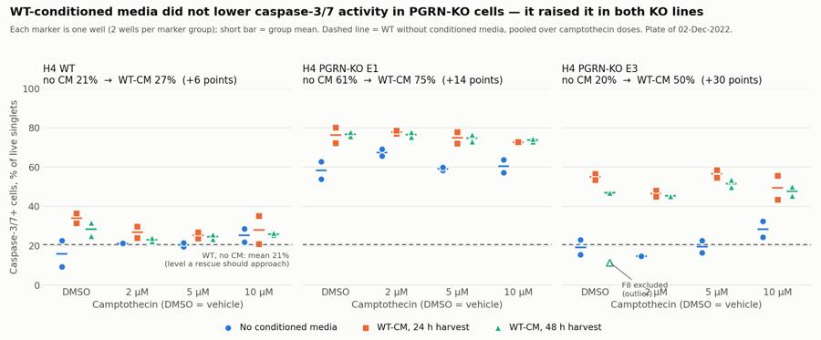
96
tool call · Bash
cd /task; python3 -I - <<'EOF'
import re
s=open('/task/work/figure.py').read()
old=s[s.index(" ax.annotate('F8 excluded"):s.index(" m_no=L[")]
new=" ax.annotate('F8 excluded (outlier)',(x,ex.casp_live.iloc[0]),xytext=(x-0.1,ex.casp_live.iloc[0]-4.5),fontsize=9,color=INK2,va='top',ha='center')\n"
s=s.replace(old,new); open('/task/work/figure.py','w').write(s)
EOF
python3 -I work/figure.py97
tool call · Read
{
"file_path": "/task/outputs/figure.png"
}98
tool output
(Bash completed with no output)
99
tool output
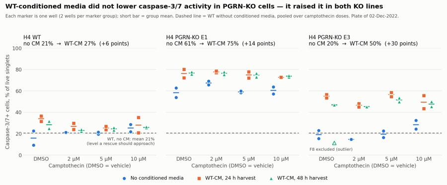
101
tool call · Bash
cd /task; python3 -I - <<'EOF'
import sys; sys.path.insert(0,'/task/work')
from load import *; import strategy as S, flowkit as fk
import matplotlib; matplotlib.use('Agg'); import matplotlib.pyplot as plt
gs=fk.parse_gating_xml('/task/outputs/gates.xml'); d=load()
ws=['G2','A12','B12','B4','C12','C4']
a=lambda x: np.arcsinh(np.asarray(x)/100)
fig,axs=plt.subplots(3,len(ws),figsize=(4*len(ws),11.5))
for j,w in enumerate(ws):
s,df=d[w]; res=gs.gate_sample(s); l=lay[lay.well==w].iloc[0]
cells=res.get_gate_membership('cells'); sing=res.get_gate_membership('singlets')
LN=lambda: matplotlib.colors.LogNorm()
ax=axs[0,j]; ax.hist2d(df['FSC-A'],df['SSC-A'],bins=160,range=[[0,1.05e6],[0,1.05e6]],norm=LN(),cmap='viridis')
p=np.array(S.CELLS_POLY+[S.CELLS_POLY[0]]); ax.plot(p[:,0],p[:,1],'r-',lw=1.2)
ax.set_title(f"{w}: {l['sample']}, {l.conditioned_media.replace(' conditioned media','')}\ncells {100*cells.mean():.1f}% of events",fontsize=10); ax.set_xlabel('FSC-A'); ax.set_ylabel('SSC-A')
ax=axs[1,j]; q=df[cells]; ax.hist2d(q['FSC-A'],q['FSC-H'],bins=160,range=[[0,1.05e6],[0,6.5e5]],norm=LN(),cmap='viridis')
p=np.array(S.SING_POLY+[S.SING_POLY[0]]); ax.plot(p[:,0],p[:,1],'r-',lw=1.2)
ax.set_title(f"singlets {100*sing.sum()/cells.sum():.1f}% of cells",fontsize=10); ax.set_xlabel('FSC-A'); ax.set_ylabel('FSC-H')
ax=axs[2,j]; q=df[sing]; b1=(q['BL1-A']-S.K21*q['BL2-A']); b2=q['BL2-A']-S.K12*q['BL1-A']
ax.hist2d(a(b1),a(b2),bins=140,range=[[-2,7.5],[-2,9.5]],norm=LN(),cmap='viridis')
ax.axhline(a(S.SYTOX_THR),color='r',lw=1.2); ax.plot([a(S.CASP_THR)]*2,[-2,a(S.SYTOX_THR)],'r-',lw=1.2)
tk=[0,100,600,3000,25000,200000]; ax.set_xticks(a(tk)); ax.set_xticklabels(tk,fontsize=8); ax.set_yticks(a(tk)); ax.set_yticklabels(tk,fontsize=8)
ax.set_xlabel('CellEvent caspase-3/7 (BL1-A, compensated)'); ax.set_ylabel('SYTOX AADvanced (BL2-A, compensated)')
ax.set_title(f"live {100*res.get_gate_count('live')/sing.sum():.1f}% of singlets; caspase+ {100*res.get_gate_count('caspase_pos_live')/res.get_gate_count('live'):.1f}% of live",fontsize=10)
fig.suptitle('Gating strategy on representative wells: cells -> singlets -> live (below red line) -> caspase_pos_live (right of red line)',fontsize=13)
fig.tight_layout(rect=(0,0,1,0.97)); fig.savefig('/task/outputs/gating_examples.png',dpi=70)
EOF102
tool call · Read
{
"file_path": "/task/outputs/gating_examples.png"
}103
tool output
(Bash completed with no output)
104
tool output
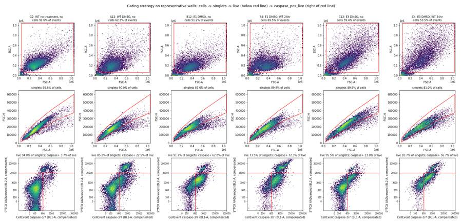
106
tool call · Bash
cd /task; python3 -I - <<'EOF'
import pandas as pd
s=pd.read_csv('work/stats.csv'); pd.set_option('display.width',200)
print(s[['a','b','mean_a','mean_b','diff','welch_p','mw_p']].to_string(float_format=lambda x:'%.3g'%x))
p=pd.read_csv('work/perwell.csv').set_index('well')
print(p.loc[['G1','G2','G3','G4','G5','G6','G7','G8'],['all_events','cells','singlets','live','dead','caspase_pos_live','caspase_pos_all','casp_live','casp_all','live_pct','cells_pct','sing_pct','ceil']].round(2).to_string())
m=p[p.index.str[0].isin(list('ABCDEF'))]
print(m[['cells_pct','sing_pct','live_pct','singlets','live']].describe().round(1))
print(pd.read_csv('outputs/flags.csv')[lambda d:d.issue_type!='none'][['well','issue_type','decision']].to_string())
EOF
head -5 outputs/counts.csv; wc -l outputs/*.csv; head -c 1500 outputs/gates.xml107
tool output
a b mean_a mean_b diff welch_p mw_p
0 E1_allCPT_noCM E1_allCPT_WTCM 61.3 75.4 14.1 3.35e-05 2.72e-06
1 E3_allCPT_noCM E3_allCPT_WTCM 20.5 50.2 29.7 9.35e-08 4.08e-06
2 WT_allCPT_noCM WT_allCPT_WTCM 20.7 27 6.33 0.0138 0.00216
3 E1_DMSO_noCM E1_DMSO_WTCM 58.4 76.5 18.1 0.117 0.133
4 E3_DMSO_noCM E3_DMSO_WTCM 19.2 52.4 33.2 0.0173 0.2
5 WT_DMSO_noCM WT_DMSO_WTCM 15.9 31.2 15.3 0.23 0.133
6 WT_allCPT_noCM E1_allCPT_noCM 20.7 61.3 40.6 2.7e-10 0.000155
7 WT_allCPT_noCM E3_allCPT_noCM 20.7 20.5 -0.229 0.939 0.959
8 WT_allCPT_noCM E1_allCPT_WTCM 20.7 75.4 54.7 8.65e-10 2.72e-06
9 WT_allCPT_noCM E3_allCPT_WTCM 20.7 50.2 29.5 5.7e-09 4.08e-06
10 WT_DMSO_noCM WT_10uM_noCM 15.9 25.3 9.31 0.371 0.667
11 E1_DMSO_noCM E1_10uM_noCM 58.4 60.5 2.15 0.737 0.667
12 E3_DMSO_noCM E3_10uM_noCM 19.2 28.4 9.21 0.238 0.333
all_events cells singlets live dead caspase_pos_live caspase_pos_all casp_live casp_all live_pct cells_pct sing_pct ceil
well
G1 26210 24648 23917 23917 0 52 52 0.22 0.22 100.00 94.04 97.03 2.03
G2 24654 22591 21599 20299 1300 751 1802 3.70 8.34 93.98 91.63 95.61 2.46
G3 35885 31594 30249 28148 2101 1578 3555 5.61 11.75 93.05 88.04 95.74 1.27
G4 34209 29979 28758 26772 1986 1558 3441 5.82 11.97 93.09 87.63 95.93 1.21
G5 15961 12370 11709 11306 403 833 1216 7.37 10.39 96.56 77.50 94.66 7.71
G6 16761 13105 12587 11850 737 797 1486 6.73 11.81 94.14 78.19 96.05 9.41
G7 24019 22377 21384 21384 0 1018 1018 4.76 4.76 100.00 93.16 95.56 1.52
G8 24323 23031 22138 21579 559 62 65 0.29 0.29 97.47 94.69 96.12 1.69
cells_pct sing_pct live_pct singlets live
count 72.0 72.0 72.0 72.0 72.0
mean 63.1 90.1 85.2 16295.3 14074.0
std 8.3 3.3 6.8 6739.8 6263.9
min 45.8 81.0 67.1 5197.0 3558.0
25% 58.3 88.4 82.6 10148.5 8420.5
50% 64.9 90.8 86.5 15906.5 13508.0
75% 68.5 92.6 89.3 22224.2 19458.8
max 80.7 94.8 96.2 28445.0 25745.0
well issue_type decision
24 C1 saturation keep_with_note
26 C3 saturation keep_with_note
32 C9 saturation keep_with_note
33 C10 saturation keep_with_note
34 C11 saturation keep_with_note
47 D12 other keep_with_note
63 F4 saturation keep_with_note
67 F8 other exclude
68 F9 saturation keep_with_note
69 F10 saturation keep_with_note
70 F11 saturation keep_with_note
71 F12 saturation keep_with_note
74 G3 mislabel keep_with_note
75 G4 mislabel keep_with_note
76 G5 mislabel keep_with_note
77 G6 mislabel keep_with_note
file,well,population,role,parent,count,pct_of_parent
Caspase-assay-2-mlk_caspase_Group_A1.fcs,A1,all_events,other,none,31328,
Caspase-assay-2-mlk_caspase_Group_A1.fcs,A1,cells,cells,all_events,20437,65.2356
Caspase-assay-2-mlk_caspase_Group_A1.fcs,A1,singlets,singlets,cells,18982,92.8806
Caspase-assay-2-mlk_caspase_Group_A1.fcs,A1,live,live,singlets,16657,87.7516
52 outputs/condition_summary.csv
561 outputs/counts.csv
81 outputs/flags.csv
694 total
<?xml version='1.0' encoding='UTF-8'?>
<gating:Gating-ML xmlns:gating="http://www.isac-net.org/std/Gating-ML/v2.0/gating" xmlns:data-type="http://www.isac-net.org/std/Gating-ML/v2.0/datatypes" xmlns:transforms="http://www.isac-net.org/std/Gating-ML/v2.0/transformations">
<transforms:transformation transforms:id="logicle">
<transforms:logicle transforms:T="1048576" transforms:W="0.5" transforms:M="4.5" transforms:A="0"/>
</transforms:transformation>
<transforms:spectrumMatrix transforms:id="comp_single_stain">
<transforms:fluorochromes>
<data-type:fcs-dimension data-type:name="CellEvent_Casp37_Green"/>
<data-type:fcs-dimension data-type:name="SYTOX_AADvanced"/>
</transforms:fluorochromes>
<transforms:detectors>
<data-type:fcs-dimension data-type:name="BL1-A"/>
<data-type:fcs-dimension data-type:name="BL2-A"/>
</transforms:detectors>
<transforms:spectrum>
<transforms:coefficient transforms:value="1.0"/>
<transforms:coefficient transforms:value="0.915"/>
</transforms:spectrum>
<transforms:spectrum>
<transforms:coefficient transforms:value="0.0003"/>
<transforms:coefficient transforms:value="1.0"/>
</transforms:spectrum>
</transforms:spectrumMatrix>
<gating:PolygonGate gating:id="cells">
<gating:dimension gating:compensation-ref="uncompensated">
<data-type:fcs-dimension data-type:name="FSC-A"/>
</gating:dimension>
<gating:dimension gating:compensation-ref="uncompensated109
tool call · Bash
cd /task; python3 -I - <<'EOF'
import json
Q="Can WT progranulin-conditioned media bring caspase-3/7 activity in H4 PGRN-KO lines (E1, E3) back toward WT levels?"
ans={
"question":Q,
"comparisons":[
{"comparison":"E1 KO, no conditioned media vs WT-conditioned media (24 h + 48 h harvests pooled; all camptothecin/DMSO wells pooled)","a":"E1_allCPT_noCM","b":"E1_allCPT_WTCM","direction":"increase",
"magnitude":"+14.1 percentage points caspase-3/7+ of live singlets (61.3% -> 75.4%; n = 8 vs 16 wells, ranges 53.9-69.1% vs 72.0-80.2%, no overlap)","confidence":"high"},
{"comparison":"E3 KO, no conditioned media vs WT-conditioned media (24 h + 48 h harvests pooled; all camptothecin/DMSO wells pooled; F8 excluded)","a":"E3_allCPT_noCM","b":"E3_allCPT_WTCM","direction":"increase",
"magnitude":"+29.7 percentage points caspase-3/7+ of live singlets (20.5% -> 50.2%; n = 8 vs 15 wells, ranges 14.7-32.4% vs 43.4-58.5%, no overlap)","confidence":"high"},
{"comparison":"WT, no conditioned media vs WT-conditioned media (all camptothecin/DMSO wells pooled)","a":"WT_allCPT_noCM","b":"WT_allCPT_WTCM","direction":"increase",
"magnitude":"+6.3 percentage points caspase-3/7+ of live singlets (20.7% -> 27.0%; n = 8 vs 16 wells, ranges overlap, Welch p = 0.014)","confidence":"low"},
{"comparison":"E1 KO vehicle (DMSO) wells only, no conditioned media vs WT-conditioned media","a":"E1_DMSO_noCM","b":"E1_DMSO_WTCM","direction":"increase",
"magnitude":"+18.1 percentage points (58.4% -> 76.5%; n = 2 vs 4 wells)","confidence":"medium"},
{"comparison":"E3 KO vehicle (DMSO) wells only, no conditioned media vs WT-conditioned media (F8 excluded)","a":"E3_DMSO_noCM","b":"E3_DMSO_WTCM","direction":"increase",
"magnitude":"+33.2 percentage points (19.2% -> 52.4%; n = 2 vs 3 wells)","confidence":"medium"},
{"comparison":"Rescue target: WT without conditioned media vs E1 KO with WT-conditioned media","a":"WT_allCPT_noCM","b":"E1_allCPT_WTCM","direction":"increase",
"magnitude":"+54.7 percentage points (20.7% -> 75.4%); the gap to WT widened from 40.6 points without conditioned media","confidence":"high"},
{"comparison":"Rescue target: WT without conditioned media vs E3 KO with WT-conditioned media","a":"WT_allCPT_noCM","b":"E3_allCPT_WTCM","direction":"increase",
"magnitude":"+29.5 percentage points (20.7% -> 50.2%); E3 was at WT level without conditioned media (20.5%)","confidence":"high"},
{"comparison":"KO phenotype without conditioned media: WT vs E1 KO","a":"WT_allCPT_noCM","b":"E1_allCPT_noCM","direction":"increase",
"magnitude":"+40.6 percentage points (20.7% -> 61.3%; n = 8 vs 8 wells)","confidence":"medium"},
{"comparison":"KO phenotype without conditioned media: WT vs E3 KO","a":"WT_allCPT_noCM","b":"E3_allCPT_noCM","direction":"no_clear_change",
"magnitude":"-0.2 percentage points (20.7% vs 20.5%; n = 8 vs 8 wells, Welch p = 0.94)","confidence":"medium"},
{"comparison":"Camptothecin challenge in WT without conditioned media: DMSO vehicle vs 10 uM","a":"WT_DMSO_noCM","b":"WT_10uM_noCM","direction":"no_clear_change",
"magnitude":"+9.3 percentage points (15.9% vs 25.3%; n = 2 vs 2 wells, the two DMSO replicates are 22.5% and 9.3%); no dose-response in any line (Spearman p > 0.05 in all six line x media groups)","confidence":"low"}
],
"overall_answer":"no: on this plate WT-conditioned media did not move either KO line toward WT. Caspase-3/7+ live cells rose with conditioned media in E1 (61.3% -> 75.4%) and E3 (20.5% -> 50.2%) against a WT level of 20.7%, and also rose slightly in WT itself (27.0%), so the media as applied is a stressor. The plate cannot say whether progranulin itself rescues, because the progranulin content of the media was not measured and there was no KO-conditioned or fresh-medium control.",
"assay_verdict":"needs_optimisation",
"next_action":"change_treatment_or_timing",
"next_change":{
"what":"Progranulin treatment (source and medium applied to the KO cells for the 24 h before read-out)",
"from":"Undiluted spent WT H4 conditioned media (harvested after 24 h or 48 h, stored at 4 C) for 24 h, compared only with wells labelled 'no conditioned media'; progranulin content not measured; no KO-conditioned media control",
"to":"A defined progranulin dose in fresh DMEM + 10% FBS (recombinant human progranulin titration, or WT-conditioned media diluted 1:1 with fresh medium after confirming progranulin by ELISA), with KO-conditioned media and a fresh-medium change handled identically as controls, read at vehicle baseline",
"why":"Spent media by itself raised caspase-3/7+ cells in all three lines (WT +6, E1 +14, E3 +30 points) and lowered viability in the KO lines (E1 92% -> 79% live, E3 91% -> 81%), so any progranulin benefit is masked by a media effect that the current design cannot separate from progranulin."},
"excluded_wells":["F8"],
"caveats":[
"Single plate, single experiment; replicates are wells (n = 2 per line x media x dose), and conditioned-media wells (columns 1-8) versus no-media wells (columns 9-12) were not randomised across the plate.",
"The notebook does not say what the 'no conditioned media' wells received on 01-Dec (fresh medium, or no wash/medium change), so the conditioned-media effect is confounded with the wash and medium change.",
"The two plate maps disagree on which wells got 24 h vs 48 h media (30-Nov map: rows A-C vs D-F; 02-Dec map: columns 1-4 vs 5-8). I used the 02-Dec map as given; conditioned media vs none (columns 1-8 vs 9-12) is the same on both maps, and 24 h vs 48 h did not differ on either reading.",
"The 28-Nov harvest plate shows E1 and E3 wells in the 48 h harvest rows, so some '48 h WT' media may in fact be KO-conditioned; progranulin in the media was not measured.",
"The camptothecin challenge gave no usable window: no dose-response in any line, DMSO vehicle wells were not lower than camptothecin wells, and singlet yield was lowest in DMSO and 10 uM wells (about 13,400 and 14,000 vs 18,200
… [2,230 more characters not shown]110
tool output
cell_line cmb
E1 False 61.33
True 75.41
E3 False 20.46
True 47.74
WT False 20.69
True 27.02
Name: casp_live, dtype: float64
live_pct casp_all bl1_live_med
cell_line cmb
E1 False 91.7 64.6 945.8
True 78.7 80.6 1506.2
E3 False 90.9 27.5 287.8
True 81.2 59.5 613.6
WT False 87.4 30.5 198.1
True 88.2 35.3 211.8
camptothecin
10uM 14014.0
2uM 19824.0
5uM 18176.0
DMSO 13421.0
Name: singlets, dtype: float64
min 3.723912
max 9.659547
Name: ceil, dtype: float64 well casp_live
72 G1 0.217419
73 G2 3.699690
74 G3 5.606082
75 G4 5.819513
76 G5 7.367769
77 G6 6.725738
78 G7 4.760569
79 G8 0.287316112
agent
Everything except the report is written; drafting `report.md` now, then a final validation pass over all deliverables.
113
tool call · Write
{
"file_path": "/task/outputs/report.md",
"content": "# Caspase-3/7 conditioned-media plate, H4 WT / PGRN-KO (acquired 02-Dec-2022)\n\n## Question\n\nCan WT progranulin-conditioned media (CM) bring caspase-3/7 activity in the H4 PGRN-KO lines E1 and E3 back toward WT levels?\n\n## Methods\n\n**Data.** 80 FCS files (Attune NxT, wells A1-F12 and G1-G8), analysed with FlowKit 1.2.3. Well identities come from `plate_layout.csv` (the 02-Dec plate map).\n\n**Channels.** The labels inside the files are stale (\"AAV-GFP\", \"AAdvanced livedead\"). From the reagent list and cytometer settings:\n\n| Detector | Measured | Voltage |\n|---|---|---|\n| BL1-A | CellEvent Caspase-3/7 Green | 225 |\n| BL2-A | SYTOX AADvanced dead-cell stain | 350 |\n\n**Compensation.** The spillover matrix stored in the files is the identity, so I built one from the two WT single-stain wells and saved it in `gates.xml` as `comp_single_stain`:\n\n- CellEvent into BL2: 0.915 (slope of the caspase-positive cells in G7, caspase stain only).\n- SYTOX into BL1: 0.0003 (from the dead cells in G8, SYTOX only).\n\n**Gates.** One strategy for all wells, no per-well adjustment.\n\n| Population | Parent | Gate | Role |\n|---|---|---|---|\n| `cells` | all events | FSC-A / SSC-A polygon; removes debris and events at the scatter ceiling | cells |\n| `singlets` | `cells` | FSC-A / FSC-H polygon | singlets |\n| `live` | `singlets` | compensated BL2-A < 25,000 (SYTOX-bright cells removed) | live |\n| `dead` | `singlets` | compensated BL2-A \u2265 25,000 | other |\n| `caspase_pos_live` | `live` | compensated BL1-A \u2265 600 | marker_positive |\n| `caspase_pos_all` | `singlets` | compensated BL1-A \u2265 600 | other |\n\nThe two fluorescence thresholds sit in the valleys of the pooled distributions and were checked on the controls:\n\n| Control well | Caspase+ of live | Dead of singlets |\n|---|---|---|\n| G1, WT unstained | 0.22% | 0.0% |\n| G8, WT SYTOX only | 0.29% | 2.5% |\n| G7, WT caspase stain only | 4.76% | 0.0% |\n| G2, WT untreated, both stains | 3.70% | 6.0% |\n\n`gating_examples.png` shows the gates on six representative wells.\n\n**Metric.** Percent caspase-3/7-positive live single cells per well = 100 \u00d7 `caspase_pos_live` / `live`. No normalisation. Means and SDs are across wells.\n\n**Grouping.** Camptothecin had no measurable effect (see Results), so the headline comparison pools the four camptothecin/DMSO columns: 8 wells per line without CM, 16 with CM. `condition_summary.csv` also lists every line \u00d7 dose \u00d7 CM group (n = 2) and the DMSO-only groups.\n\n**Quality control.**\n\n- Acquisition was stable in all 80 wells: 16-17 s each, and the read-out differed by at most 4.6 percentage points between thirds of the run. No clogs or dry runs.\n- F8 is excluded as an outlier that does not match its label.\n- D12, the four mislabelled row-G wells and ten E3 wells with scatter saturation are kept with a note. Details are in `flags.csv`.\n\n## Results\n\n**Conditioned media raised caspase-3/7+ cells in every line; it did not lower it in either KO line** (`figure.png`).\n\n| Line | No CM | WT-CM | Change | Wells (no CM / CM) | Welch p |\n|---|---|---|---|---|---|\n| WT | 20.7 \u00b1 5.3% | 27.0 \u00b1 4.6% | +6.3 points | 8 / 16 | 0.014 |\n| E1 KO | 61.3 \u00b1 4.9% | 75.4 \u00b1 2.6% | +14.1 points | 8 / 16 | 3 \u00d7 10\u207b\u2075 |\n| E3 KO | 20.5 \u00b1 6.3% | 50.2 \u00b1 4.9% | +29.7 points | 8 / 15 | 9 \u00d7 10\u207b\u2078 |\n\n- For both KO lines the CM and no-CM wells do not overlap (E1: 72.0-80.2% vs 53.9-69.1%; E3: 43.4-58.5% vs 14.7-32.4%).\n- The same holds in the DMSO vehicle wells alone: E1 58.4% \u2192 76.5%, E3 19.2% \u2192 52.4%, WT 15.9% \u2192 31.2%.\n- Against the WT level of 20.7%, E1 with CM is 54.7 points higher (40.6 without CM) and E3 with CM is 29.5 points higher (0.2 lower without CM). Both lines moved away from WT.\n- CM also lowered viability in the KO lines: live cells fell from 91.7% to 78.7% of singlets in E1 and from 90.9% to 81.2% in E3. WT was unchanged (87.4% vs 88.2%).\n- 24 h and 48 h harvests gave the same result (E1 75.4% vs 75.4%; E3 51.9% vs 48.1%; WT 28.6% vs 25.5%).\n\n**The KO phenotype is present in only one clone.** Without CM, E1 is 40.6 points above WT; E3 is at WT level (20.5% vs 20.7%).\n\n**The camptothecin challenge did not work as a challenge.**\n\n- No dose-response in any of the six line \u00d7 CM groups (Spearman p > 0.05 in all).\n- DMSO vehicle wells were not lower than camptothecin wells. In WT without CM the two vehicle wells read 22.5% (A12) and 9.3% (D12), against 19.5-28.6% for the six camptothecin wells.\n- Singlet yield was lowest in the DMSO and 10 \u00b5M columns (about 13,400 and 14,000 per well, against 18,200 at 5 \u00b5M and 19,800 at 2 \u00b5M). Cell loss follows the columns that would carry the most DMSO, not the camptothecin dose.\n- The untreated wells in row G are far lower than any vehicle well: 3.7% (G2, WT), 5.6-5.8% (G3/G4) and 6.7-7.4% (G5/G6).\n\n**Robustness.** The direction of every CM comparison is unchanged when the caspase threshold is moved between 400 and 2,000, when the SYTOX threshold is moved between 3,000 and 50,000, and when caspase+ is counted over all singlets instead of live cells (E1 64.6% \u2192 80.6%; E3 27.5% \u2192 59.5%; WT 30.5% \u2192 35.3%).\n\n## Conclusion\n\nNo. On this plate WT-conditioned media did not restore WT-level caspase-3/7 activity in either PGRN-KO line; it increased the caspase-positive fraction in E1 and E3 and slightly in WT.\n\nThis shows the media, as prepared and applied, stresses the cells. It does not show that progranulin fails to rescue: progranulin in the media was never measured, and there was no control that separates progranulin from spent medium.\n\n## Caveats\n\n- **Design.** One plate, one experiment. Replicates are wells (n = 2 per group), and CM wells (columns 1-8) and no-CM wells (columns 9-12) were not randomised.\n- **Unknown handling of the no-CM wells.** The notebook does
… [2,719 more characters not shown]114
tool output
File created successfully at: /task/outputs/report.md (file state is current in your context — no need to Read it back)
115
tool call · Bash
cd /task; python3 -I - <<'EOF'
import flowkit as fk, pandas as pd, json, glob, re, os
gs=fk.parse_gating_xml("/task/outputs/gates.xml")
c=pd.read_csv('/task/outputs/counts.csv',keep_default_na=False)
assert list(c.columns)==['file','well','population','role','parent','count','pct_of_parent']
assert c.file.nunique()==80 and len(c)==80*7
assert all(c.groupby('file').population.apply(lambda s: tuple(s))==c.groupby('file').population.apply(lambda s: tuple(s)).iloc[0])
for role in ['cells','singlets','live','marker_positive']: assert c[c.role==role].population.nunique()==1, role
gids=[g for g,_ in gs.get_gate_ids()]
assert set(c.population)-{'all_events'}==set(gids), (set(c.population),gids)
assert all(re.fullmatch(r'[A-Za-z][A-Za-z0-9_]*',g) for g in gids)
# recount from plain Sample() on all files, compare
bad=0
for f in sorted(glob.glob('/task/inputs/raw/*.fcs')):
s=fk.Sample(f); res=gs.gate_sample(s); sub=c[c.file==os.path.basename(f)].set_index('population')
assert int(sub.loc['all_events','count'])==s.event_count
for g in gids:
if int(res.get_gate_count(g))!=int(sub.loc[g,'count']): bad+=1
for p,r in sub.iterrows():
if p!='all_events':
assert abs(float(r.pct_of_parent)-100*int(r['count'])/int(sub.loc[r.parent,'count']))<1e-3
print('count mismatches',bad)
fl=pd.read_csv('/task/outputs/flags.csv',keep_default_na=False)
assert list(fl.columns)==['file','well','issue_type','evidence','decision'] and len(fl)==80 and fl.file.nunique()==80
assert set(fl.issue_type)<= {'none','clog','ran_dry','too_few_events','saturation','bad_control','mislabel','other'}
assert all(fl[fl.issue_type=='none'].decision=='keep') and set(fl.decision)<={'keep','keep_with_note','exclude'}
assert all(fl[fl.issue_type!='none'].evidence.str.contains(r'\d'))
cs=pd.read_csv('/task/outputs/condition_summary.csv',keep_default_na=False)
assert list(cs.columns)==['condition','wells','n_wells_used','mean','sd','metric_definition','normalisation_applied']
assert all(cs.wells.str.split(';').str.len()==cs.n_wells_used.astype(int)); assert cs.condition.is_unique
assert all((cs.sd=='')==(cs.n_wells_used.astype(int)==1))
ex=set(fl.well[fl.decision=='exclude']); assert not any(ex & set(w.split(';')) for w in cs.wells)
a=json.load(open('/task/outputs/answer.json'))
assert set(a['excluded_wells'])==ex
for k in a['comparisons']:
assert k['a'] in set(cs.condition) and k['b'] in set(cs.condition) and k['direction'] in('increase','decrease','no_clear_change') and k['confidence'] in ('high','medium','low')
ma=float(cs.set_index('condition').loc[k['a'],'mean']); mb=float(cs.set_index('condition').loc[k['b'],'mean']); print(k['a'],k['b'],round(mb-ma,1),k['direction'])
assert a['overall_answer'].split(':')[0] in('yes','partial','no')
assert a['next_action'] in ['proceed_as_planned','repeat_unchanged','repeat_with_change','optimise_reagent_or_setting','change_treatment_or_timing','switch_assay','stop']
r=open('/task/outputs/report.md').read(); print([l for l in r.splitlines() if l.startswith('## ')])
print(os.listdir('/task/outputs'))
EOF116
tool output
count mismatches 0 E1_allCPT_noCM E1_allCPT_WTCM 14.1 increase E3_allCPT_noCM E3_allCPT_WTCM 29.7 increase WT_allCPT_noCM WT_allCPT_WTCM 6.3 increase E1_DMSO_noCM E1_DMSO_WTCM 18.1 increase E3_DMSO_noCM E3_DMSO_WTCM 33.2 increase WT_allCPT_noCM E1_allCPT_WTCM 54.7 increase WT_allCPT_noCM E3_allCPT_WTCM 29.5 increase WT_allCPT_noCM E1_allCPT_noCM 40.6 increase WT_allCPT_noCM E3_allCPT_noCM -0.2 no_clear_change WT_DMSO_noCM WT_10uM_noCM 9.3 no_clear_change ['## Question', '## Methods', '## Results', '## Conclusion', '## Caveats', '## Recommendation'] ['report.md', 'flags.csv', 'gating_examples.png', 'answer.json', 'condition_summary.csv', 'counts.csv', 'figure.png', 'gates.xml']
118
agent
**No — on this plate WT-conditioned media did not bring either PGRN-KO line back toward WT; it raised the caspase-3/7-positive fraction in both.** All deliverables are in `/task/outputs/`, and the counts in `counts.csv` reproduce exactly from the saved `gates.xml` on all 80 files.
| Line | No conditioned media | WT-conditioned media | Change |
|---|---|---|---|
| WT | 20.7% | 27.0% | +6.3 points |
| E1 KO | 61.3% | 75.4% | +14.1 points |
| E3 KO | 20.5% | 50.2% | +29.7 points |
Values are percent caspase-3/7-positive of live single cells, pooled over the four camptothecin/DMSO columns (8 wells without media, 16 with; 15 for E3).
- **Direction is robust.** For both KO lines the media and no-media wells do not overlap, the DMSO-only wells show the same thing, and the direction holds across a wide range of caspase and SYTOX thresholds.
- **This does not show progranulin fails to rescue.** Progranulin in the media was never measured and there was no KO-conditioned or fresh-medium control.
- **Viability fell with the media in the KO lines.** Live cells dropped from 92% to 79% in E1 and from 91% to 81% in E3, so the media as applied is a stressor.
- **The KO phenotype is in one clone only.** Without media E1 is about 41 points above WT, while E3 sits at WT level.
- **The camptothecin challenge gave no window.** There is no dose-response in any line, and DMSO vehicle wells are not lower than camptothecin wells. Untreated row-G wells read only 3.7–7.4%, far below any vehicle well.
My verdict is `needs_optimisation`, and the recommended next step is `change_treatment_or_timing`: replace undiluted spent media with a defined progranulin dose in fresh medium, with KO-conditioned media and a fresh-medium change as controls.
Judgement calls you should know about:
- **Channels and compensation.** BL1 is CellEvent caspase-3/7 and BL2 is SYTOX AADvanced (the file labels are stale). The files carry no real spillover matrix, so I built one from the two WT single-stain wells (CellEvent spills about 0.92 into BL2).
- **What counts as caspase-positive.** The caspase-positive population is also dimly SYTOX-positive. I counted it as live and caspase-positive (early apoptotic). There are no unstained or single-stain controls for E1 or E3, so a KO-specific autofluorescence contribution cannot be ruled out.
- **F8 excluded.** It reads 11.5% against 43–58% for the other 15 E3 media wells and looks like a no-media well. Including it moves the E3 media mean from 50.2% to 47.7%.
- **Row G labels look swapped.** G5/G6 (labelled E1) have E3-like scatter and G3/G4 (labelled E3) do not. I kept them as untreated references only; G3/G4 being E1 is by elimination, since scatter cannot tell E1 from WT.
- **Other flags.** D12 (a discordant WT vehicle replicate) and ten E3 wells with scatter at the detector ceiling are kept with a note. I did not flag the DMSO wells individually; the vehicle problem is described at experiment level in the report.
- **24 h vs 48 h media.** The two plate maps disagree on which wells got which. I used the 02-Dec map as supplied; media versus none is the same on both maps, and the two harvests did not differ on either reading.
I also added `gating_examples.png`, which shows the gates on six representative wells.
final result
**No — on this plate WT-conditioned media did not bring either PGRN-KO line back toward WT; it raised the caspase-3/7-positive fraction in both.** All deliverables are in `/task/outputs/`, and the counts in `counts.csv` reproduce exactly from the saved `gates.xml` on all 80 files. | Line | No conditioned media | WT-conditioned media | Change | |---|---|---|---| | WT | 20.7% | 27.0% | +6.3 points | | E1 KO | 61.3% | 75.4% | +14.1 points | | E3 KO | 20.5% | 50.2% | +29.7 points | Values are percent caspase-3/7-positive of live single cells, pooled over the four camptothecin/DMSO columns (8 wells without media, 16 with; 15 for E3). - **Direction is robust.** For both KO lines the media and no-media wells do not overlap, the DMSO-only wells show the same thing, and the direction holds across a wide range of caspase and SYTOX thresholds. - **This does not show progranulin fails to rescue.** Progranulin in the media was never measured and there was no KO-conditioned or fresh-medium control. - **Viability fell with the media in the KO lines.** Live cells dropped from 92% to 79% in E1 and from 91% to 81% in E3, so the media as applied is a stressor. - **The KO phenotype is in one clone only.** Without media E1 is about 41 points above WT, while E3 sits at WT level. - **The camptothecin challenge gave no window.** There is no dose-response in any line, and DMSO vehicle wells are not lower than camptothecin wells. Untreated row-G wells read only 3.7–7.4%, far below any vehicle well. My verdict is `needs_optimisation`, and the recommended next step is `change_treatment_or_timing`: replace undiluted spent media with a defined progranulin dose in fresh medium, with KO-conditioned media and a fresh-medium change as controls. Judgement calls you should know about: - **Channels and compensation.** BL1 is CellEvent caspase-3/7 and BL2 is SYTOX AADvanced (the file labels are stale). The files carry no real spillover matrix, so I built one from the two WT single-stain wells (CellEvent spills about 0.92 into BL2). - **What counts as caspase-positive.** The caspase-positive population is also dimly SYTOX-positive. I counted it as live and caspase-positive (early apoptotic). There are no unstained or single-stain controls for E1 or E3, so a KO-specific autofluorescence contribution cannot be ruled out. - **F8 excluded.** It reads 11.5% against 43–58% for the other 15 E3 media wells and looks like a no-media well. Including it moves the E3 media mean from 50.2% to 47.7%. - **Row G labels look swapped.** G5/G6 (labelled E1) have E3-like scatter and G3/G4 (labelled E3) do not. I kept them as untreated references only; G3/G4 being E1 is by elimination, since scatter cannot tell E1 from WT. - **Other flags.** D12 (a discordant WT vehicle replicate) and ten E3 wells with scatter at the detector ceiling are kept with a note. I did not flag the DMSO wells individually; the vehicle problem is described at experiment level in the report. - **24 h vs 48 h media.** The two plate maps disagree on which wells got which. I used the 02-Dec map as supplied; media versus none is the same on both maps, and the two harvests did not differ on either reading. I also added `gating_examples.png`, which shows the gates on six representative wells.